SSHD2382 · Category 18
Magazines & Annuals
1. Scope
This category has about 39 books. There are many of them, but they are similar in kind: they are not textbooks but databases of work. Most of their content is images with short captions, so this summary does not focus on summing up any one book. Instead it explains how to use annuals and magazines effectively for design research.
| Type | Examples in this collection | Features |
|---|---|---|
| Juried annual | JAGDA Graphic Design in Japan, Tokyo TDC, APD, SPD, red dot, China Brand Design Annual | One volume a year; selected by a jury; reflects industry standards |
| Magazine | IDEA (Japan), Novum (Germany), BranD, Design 360, 《Gallery 形錄》 | Published monthly or every two months; has features, interviews and process |
| Topic and method books | idea+10, Smashing Magazine's 《移動 Web 設計精髓》 | Usable methods drawn from a large number of cases |
| Designer monographs | Kohei Sugiura, 《疾風迅雷》 | Decades of one designer's work and thinking |
| Exhibition catalogues | National Museum: 《宋代花箋特展》, 《仙山圖特展》, 《蘇州片及其影響》, and others | High-quality historical images and research texts |
2. Core Concepts
2.1 Where Each Source Sits
2.2 What Question Each Source Can Answer
| Your question | Look first in | Why |
|---|---|---|
| What is popular in posters or packaging now? | JAGDA, APD, Japan Brand and Packaging Design Annual | A year's selected work is gathered in one volume |
| What different solutions exist for this kind of brief? | Several works in the same category of an annual | You can compare them side by side |
| How was this piece made? | Features and interviews in IDEA and Novum | They include sketches, process and the designer's own account |
| High-level examples of type and lettering design | Tokyo TDC Annual, 《BranD》 type issues | Juried with type as the theme |
| Layouts for magazines and publications | SPD Publication Design Annual, Kohei Sugiura, 《疾風迅雷》 | Specialised judging of layouts and covers |
| Future concepts for products or interaction | red dot concept award annuals | Concept designs not yet in mass production |
| Traditional Chinese images and colour | Museum special exhibition catalogues | High-quality images of original works with scholarly notes |
2.3 Learning "Magazine Design" Itself from Kohei Sugiura
《疾風迅雷》 records half a century of Kohei Sugiura's magazine design. He treated a magazine as a time-based object: each issue is part of a series, so the cover must have a consistent system and yet be different every issue.
- System and variation: a fixed masthead position, grid and typeface form the system; each issue's images and colours bring variation.
- Spines side by side: when several issues stand side by side, the spines can join into a larger image or rhythm.
- Type as image: Chinese characters and Japanese kana are treated as formal elements, in line with the ideas in 03 Typography & Lettering.
- Density of information: a large amount of information is arranged in a fine hierarchy instead of being reduced. See 04 Layout & Grid Systems.
3. Principles & Methods
3.1 Visual Research Process
flowchart LR A[Define the problem<br/>What am I solving] --> B[Scan widely<br/>Flip fast, no judging] B --> C[Collect<br/>Photo or screenshot 15–30 items] C --> D[Label<br/>Source, year, designer] D --> E[Analyse<br/>Break down with course terms] E --> F[Generalise<br/>Find shared principles] F --> G[Transform<br/>Apply to your own design]
- Set the question first, then open the books: for example, "How can a single colour express a lively festival?" works far better than "find nice posters".
- Do not stop while scanning: in the first round only mark items, and look closely in the second round, so that one piece does not grab you early and narrow your view.
- Collect in quantity: at least 15–30 items, so that patterns become visible.
3.2 Work Analysis Table
For each piece you collect, break it down with the course terms in the table below, instead of just writing "looks good":
| Item | Question | Course link |
|---|---|---|
| Visual elements | Which points, lines, planes, shapes and textures are used? | Week 2 |
| Grid and layout | Is there a clear grid? How many columns, and what are the margins? | Weeks 3, 5 |
| Hierarchy | What do you see first, second and third? | Week 4 |
| Design principles | How are contrast, repetition, alignment, proximity, balance and rhythm used? | Weeks 6–7 |
| Colour | Number of colours, hue relationships, value contrast, mood | Week 8 |
| Type | Type classification, weight, letter-spacing, mixed Chinese and Latin setting | Week 9 |
| Meaning | Which symbols, metaphors or cultural references are used? | Week 10 |
| Strategy | Who is it for? What problem does it solve? | Week 11 |
3.3 Mood Boards versus Precedent Studies
3.4 Borrow Principles, Not Forms
The work in annuals is protected by copyright. The aim of research is to understand principles, not to copy appearances.
- You can borrow: compositional strategies (for example, using a large area of white space to make one small element stand out), approaches to hierarchy, colour relationships, and ways of thinking about concepts.
- You should not borrow: specific images, logos, illustrations, type designs or whole layouts.
- How to check: put your work beside the reference work. If people think at first glance that they are "from the same series", you have borrowed too much.
- Cite your sources: when you mention a reference work in your portfolio or design statement, give the designer, title, year and source (for example, "《日本平面設計年鑑 2017》, p.79").
3.5 Building a Personal Reference Library
- Sort with two kinds of tags at once: subject (poster, packaging, logo, layout, type) and principle (white space, contrast, grid, handwriting).
- Record the source of every image, or you will not be able to cite it later.
- Tidy it once a month and delete images that no longer inspire you, to keep the library lean.
- This habit is also part of working professionally as a designer.
4. Selected Figures
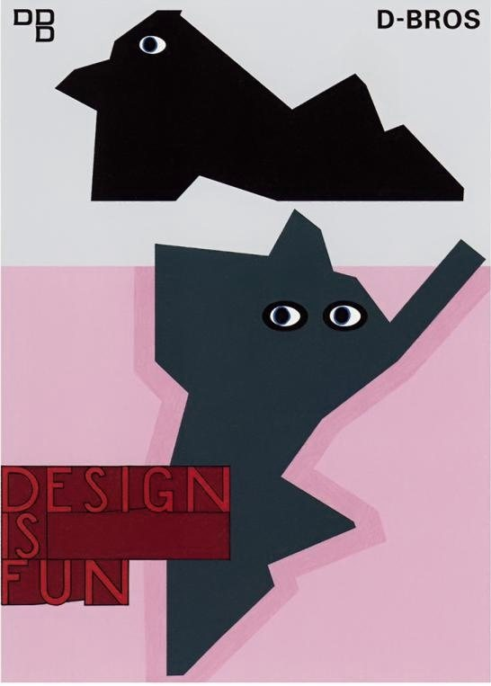
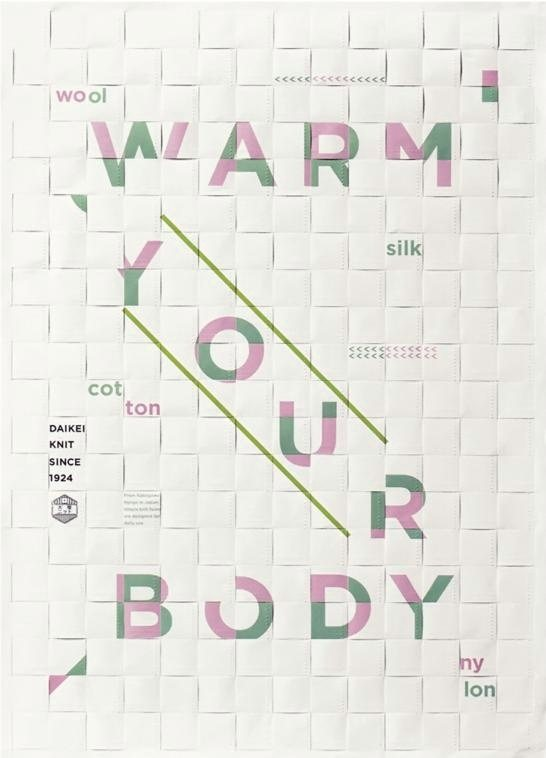
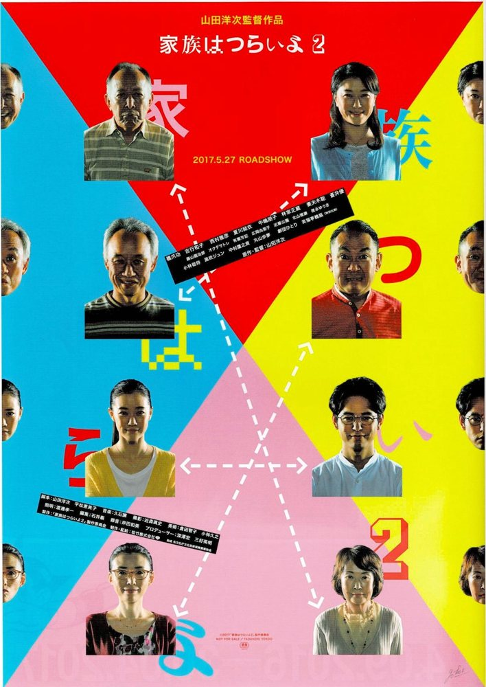
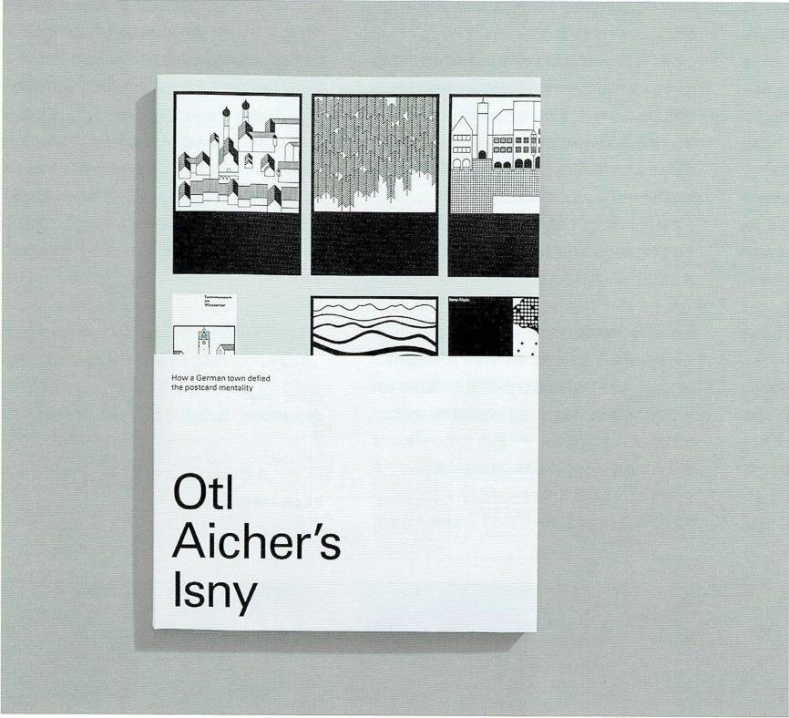
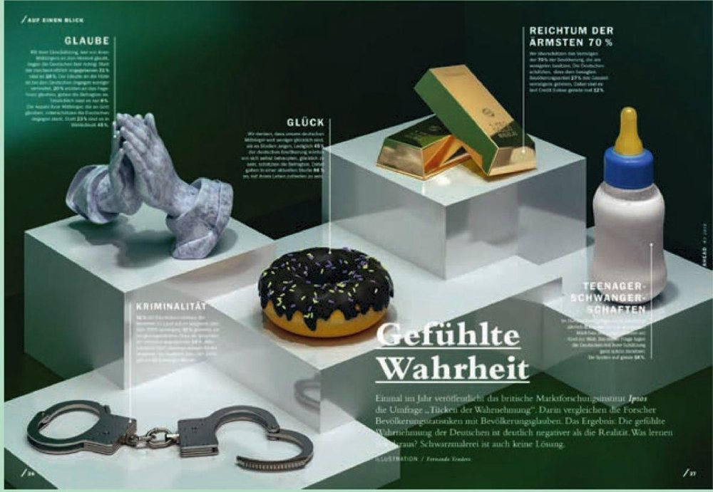
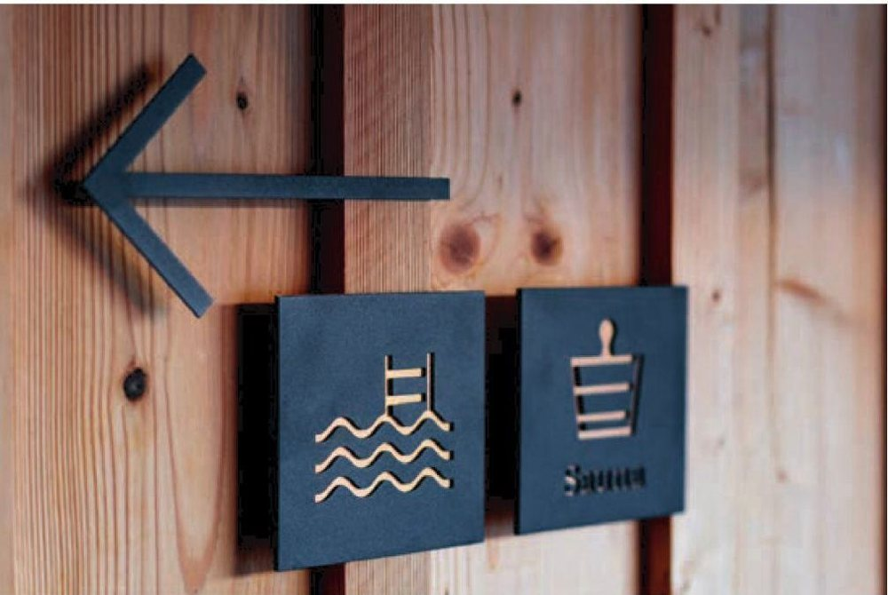
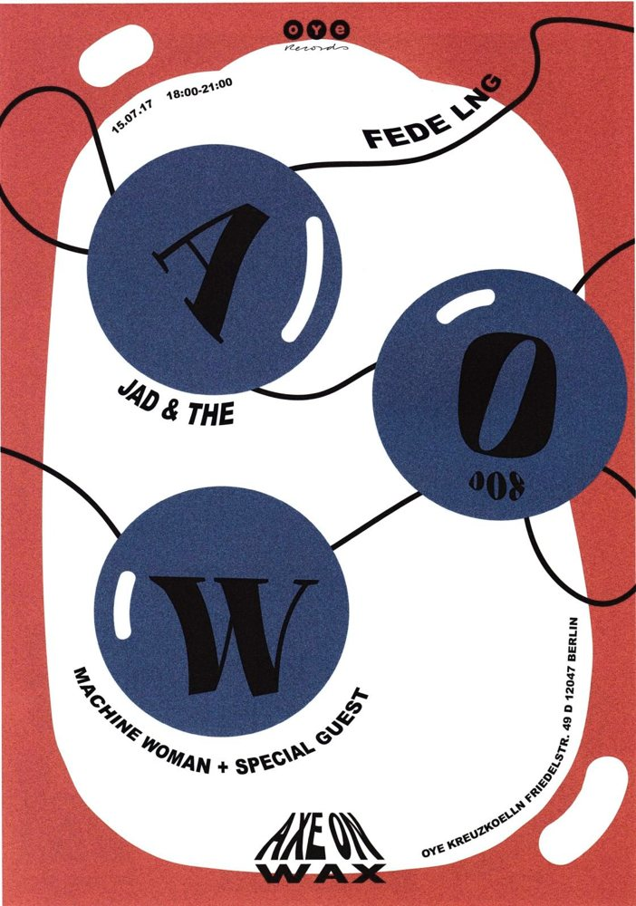
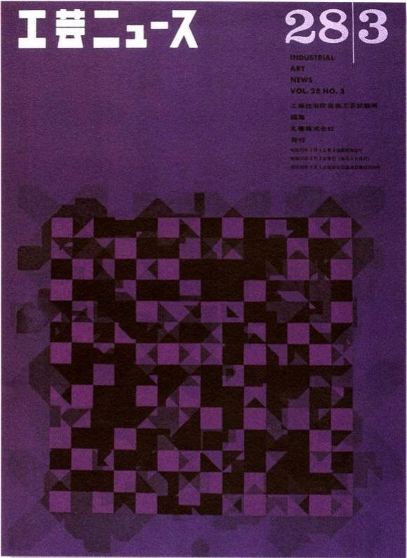
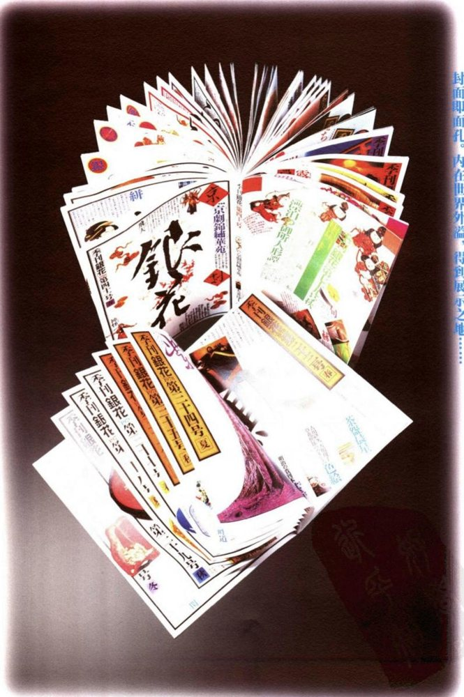
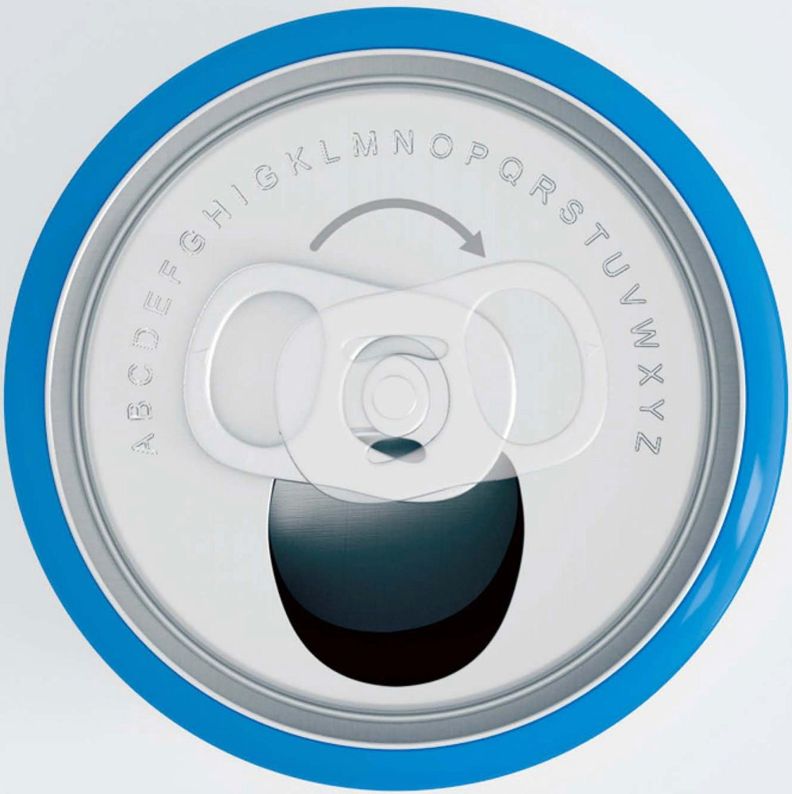
5. Source Bookshelf
Suggested order of use: first scan the industry standard with the latest 《日本平面設計年鑑》 and APD, then look up the relevant features in IDEA or Novum for your topic, then read Kohei Sugiura's 《疾風迅雷》 and the SPD annual for layout or magazine briefs, and finally check the museum catalogues when you need traditional Chinese images.
Show 39 titles
- 2021日本平面設計年鑑 - 45th Publication Design Annual - APD亞太設計年鑑No.17(1) - BRAND 12 - Brand NO.36-生活使用手冊2：文創熱量 - Brand NO.37-字己 - Brand NO.38-手工印刷 - Brand NO.39-物料進化 - Brand NO.40-文化時光機1868-1988 - Brand NO.41-看圖説話，你的信息時代 - Brand NO.42.-你好，藝術pdf - Brand NO.43-小物志 - Brand NO.44-貓狗日誌 - Design 360 雜誌(1) - Gallery 形錄 全球最佳圖形設計 vol.09 - IDEA 377 - Novum201901 - [007]APD9亞太平面設計年鑑 - [012]APD5亞太設計年鑑 - [025]中國品牌設計年鑑 2013 - [226]日本字體與平面設計大獎年鑑 - [367]國家博物館-仙山圖特展 - [368]國家博物館-宋末民初上海畫壇 - [369]國家博物館-宋代花箋特展 - [373]國家博物館-蘇州片及其影響 - [374]國家博物館-瓶花與盆景畫特展 - [375]國家博物館-書畫菁華特展 - idea+10 1 舉一反百的聰明設計法則 - idea+10 2 一計點睛的即效設計處方 - red-dot-award-concept-2011-2012 - red_dot_award_design_concept_2013-2014 - BRAND - BranD - gallery - 國際設計年鑑2014 - 日本品牌與包裝設計年鑑 2016 - 日本平面創意設計年鑑 2002-2004 - 疾風迅雷 杉浦康平雜誌設計的半個世紀 - 眾妙之門：移動Web設計精髓（德）Smashing雜誌6. Study Cues
- Write one specific research question for this week's assignment, then collect 15 relevant works from the annuals.
- Use the analysis table in 3.2 to break down three of them, writing at least one sentence for each item.
- Compare works in the same category (for example, posters) in annuals from two different years, and point out one change in style.
- How does a mood board differ from a precedent study? Which one does your assignment need right now?
- Choose one reference work and write two "principles you can borrow" and two "forms you should not borrow".
- Write citations for three reference works in the format "designer, title, year, source, page".
7. Each Book
Each book in the bookshelf is described below. Every title above links to its section.
2021日本平面設計年鑑
Scope. This is the annual of the Japan Graphic Designers Association (JAGDA), Graphic Design in Japan 2021. It collects work by members completed or first published between October 2019 and October 2020. Each member may submit at most 15 pieces, with at most 10 per category, and each must come with a short note on its background. The front section has a round-table discussion and essays; the awards include the Yusaku Kamekura Award, the JAGDA Award, the JAGDA New Designer Award and This One! (roughly pages 022–076).
Main ideas
- The annual is mainly about the work. The short notes give background for the jury and readers, explaining what each piece was made for.
- The jury is elected by a vote of all members and numbers about one per cent of full members (29 planned, 28 actually attended). Because of the pandemic, the first round was split into three groups, each viewing three or four categories; the whole jury judged together only on the final day. Each category was voted on by placing tokens, with no limit on how many pieces each person could vote for.
- The front-section topics include: awareness shifting from "I" to "we", the merits and faults of democratising design, how graphic skills can serve purpose-driven brands, an exhibition on identity, and design fees and management. These are essay titles, not a theory of the work itself.
- Inside are members' works such as posters and visuals for solo exhibitions, with the designers' names, for example Kazunari Hattori's work for his solo exhibition.
Methods
- Read the background note first and write down the client, the setting and the constraints before looking at the image. If you cannot fill in one of the three, do not use that piece as evidence for your argument.
- Look at five pieces in the same category in a row, noting only the medium (poster, identity, book, packaging) and the audience named in the note. If your assignment uses the same medium, state how your audience differs.
- For each front-section essay, copy only the title, then give one example from your own work that fits it or contradicts it. Leave the title in the annual.
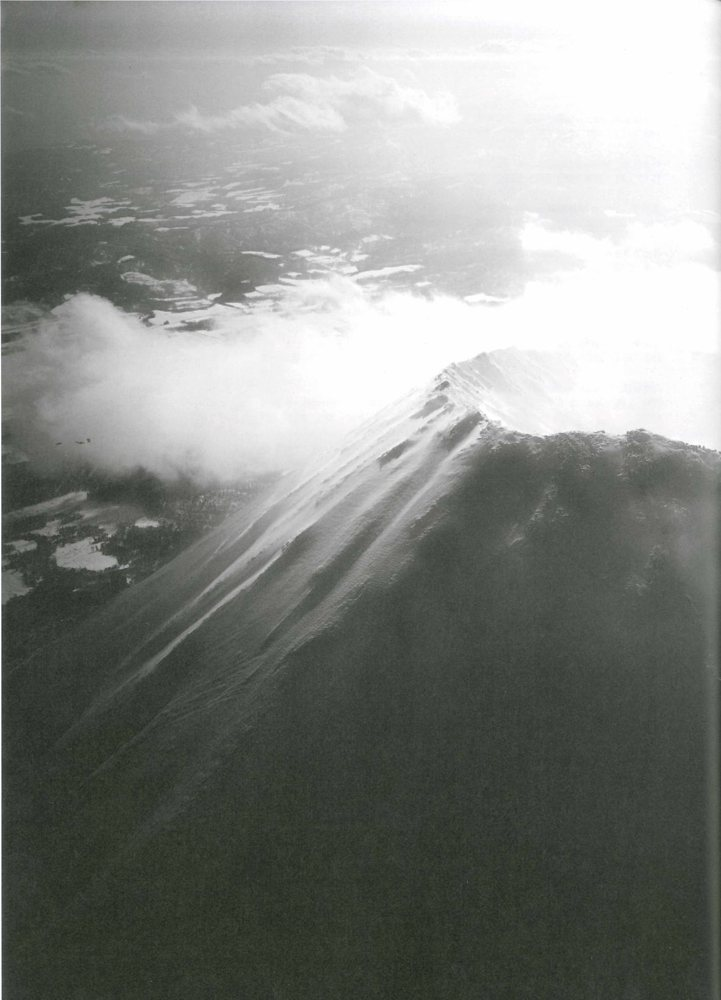
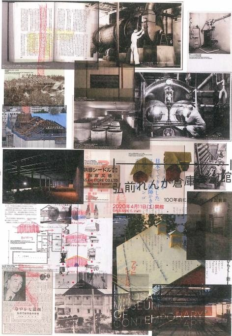
Study cues
- Why does the annual limit the number of entries per member? How does this change how "representative" the work you see is?
- Choose one piece with a note and rewrite it in three sentences: who commissioned it, where it is used, and which part of the image directly serves that use.
45th Publication Design Annual
Scope. The 45th Publication Design Annual collects magazine and periodical layouts, not a design theory. The contents repeatedly feature The New York Times Magazine, UPPERCASE, WIRED, W, Field & Stream, More, Elephant, Good, Nylon, New York, Esquire, WIRED Italy and Rides. Among them, the March, May and August 2009 issues of WIRED are marked as the Magazine of the Year gold winner, with Scott Dadich as creative director.
Main ideas
- Each entry usually records the publication, issue, award category, and the creative director, design director, art director, designers, illustrators, photo editor and publisher.
- The categories are very fine. The examples sampled include "Magazine of the Year" and "Design: Section, single month".
- Inside pages reproduce magazine infographics at full-page size. One WIRED feature uses dots to link puzzles, board games and game theory into a relationship map, and teaches readers how to read it.
- The same publication can be selected several times for different issues and sections. When comparing, check whether it is a cover, a feature or a single page.
Methods
- For every entry, write one line: publication, issue, category, and who was responsible for the layout. Without that line, treat it only as a nice picture.
- Choose two entries from one publication (for example, the WIRED relationship map and another feature) and compare only how text and images share the work; do not redraw their illustrations.
- When designing your own magazine spread, first write down the action the page should help the reader complete (compare, read in order, find a number), then decide how large the photos should be.
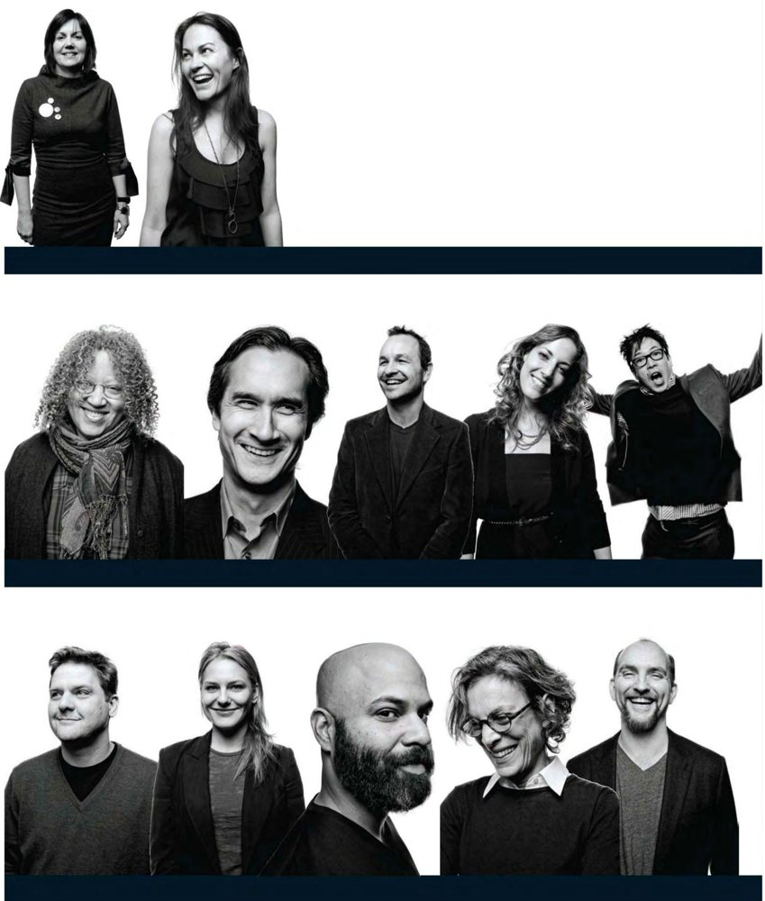
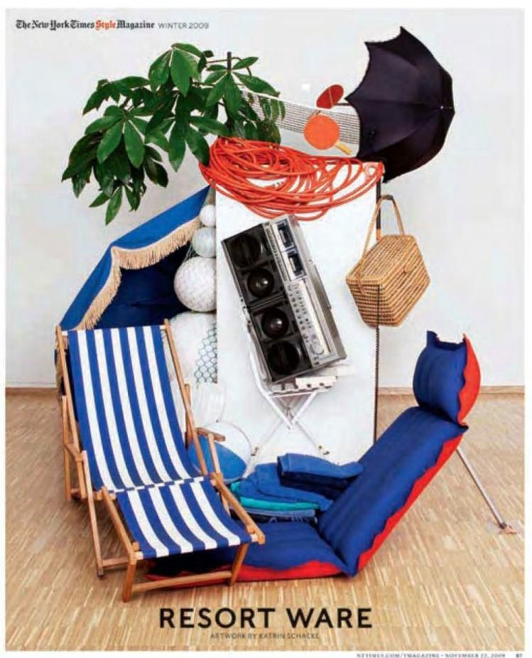
Study cues
- "Magazine of the Year" and "single-month section" judge two different scopes. In one sentence each, say what you would look for on the page.
- The puzzle relationship map works through dots and connecting lines. If you adapted it to your topic, where should the reader look first?
APD亞太設計年鑑No.17(1)
Scope. The first volume of the 17th 《APD 亞太設計年鑑》 is an annual of work plus short essays by guest editorial board members. Their topics centre on graphic design after the pandemic: Guang Yu writes on change and constancy, Chris Carolli on reimagining the designer's role, Zhang Hao on bringing type back to life, Pan Yanrong on books, Shinnoske Sugisaki on redefining graphic design, Lin Shaobin on design restarting the future, Jae-min Lee on treating design kindly, Liu Zhao on the transformation of design, and Daigo Daikoku on design that resonates with the world. The book also introduces Kan Tai-keung, Hideki Nakajima, Han Jiaying and Bi Xuefeng.
Main ideas
- The annual publishes both short essays and work. Each essay is the editor's own topic, and together they do not form one shared position.
- Work pages use a credits list to show the design firm, creative director, art director and designers, as well as roles such as architect, motion, web, type, copywriting, photography and client.
- The category tags for the work include identity, editorial, type, web interface, poster, thesis and experimental.
- When looking through the images, check the tags and credits before the form. The tag tells you which column the piece was placed in.
Methods
- Choose three pieces with different tags and write one sentence for each: who its audience is, and what it is printed on or displayed on. Keep the sentence pattern the same so they are easy to compare.
- When reading the editors' essays, note only the author's topic and one example. Do not merge the nine topics into a conclusion about "pandemic design".
- If a work page has a credits list, copy down who actually did the layout, separately from those who only handled the client or coordination.
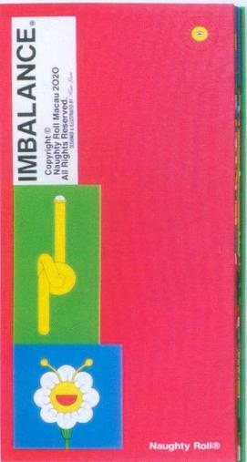
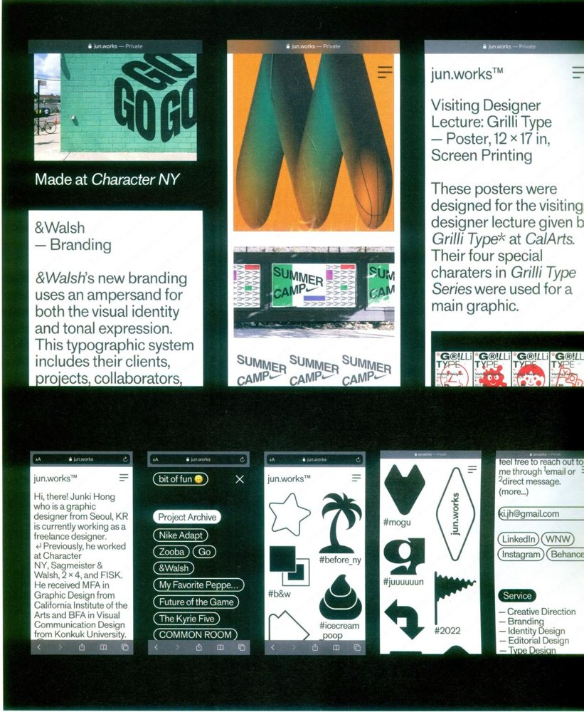
Study cues
- The topics of the nine editors' essays can be listed side by side. Why should they not be merged into a single "theory of this volume"?
- Give one of your own assignments annual-style tags and a credits list. Which column can you not fill with a name or a use?
BRAND 12
Scope. Issue 12 of BRAND (linked with ooogoLAB) focuses on brand case studies. One article, "The Birth of the Brand", is noted as a supplement to the previous issue. It traces "brand" from branding irons and bakers' marks, through 19th-century trademark law, to radio slogans and the 1941 Bulova watch television commercial. The other pages are identity and packaging cases; the contents list Typography Principles, In Motion and Editorial Style, and names such as Fine Blooms Florist, Gucci, Hershey's, Park Lane, Reshoevn8r, The Meteor, Atelier Markgraph and ANTI Inc.
Main ideas
- The history article gives background: how trademarks, advertising and what was later called the brand appeared one after another. It is one article in the issue, not a manual for the posters and packaging in the rest of it.
- The case pages show how logos, type, motion and editorial style are used for a shop, a food brand or a global rebrand.
- Within the same issue, the historical account and the contemporary cases are laid out separately. When reading, do not use the bread law of 1266 to explain a florist's logo.
- Many pages are images. The extracted text is often just company names, so for visual research you must note the medium yourself.
Methods
- For the history article, make just one timeline: one example each for branding irons, regulation, newspapers, radio and television. Then close it and look at the case images.
- Record each case in four boxes: name, industry, the media you can see (packaging, logo, motion, layout), and one treatment you can name (type weight, colour, photography or illustration).
- When you move to your own topic, borrow only one box (for example, "how type on food packaging separates flavours") and redo it with your own brand name.
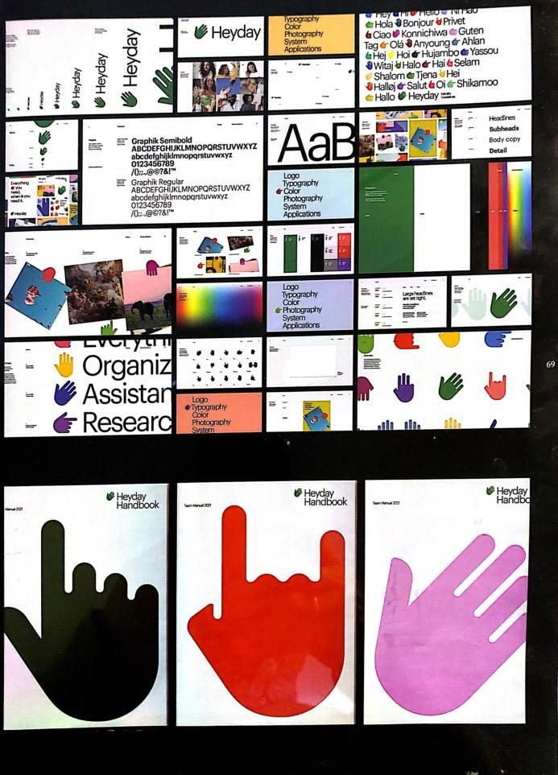
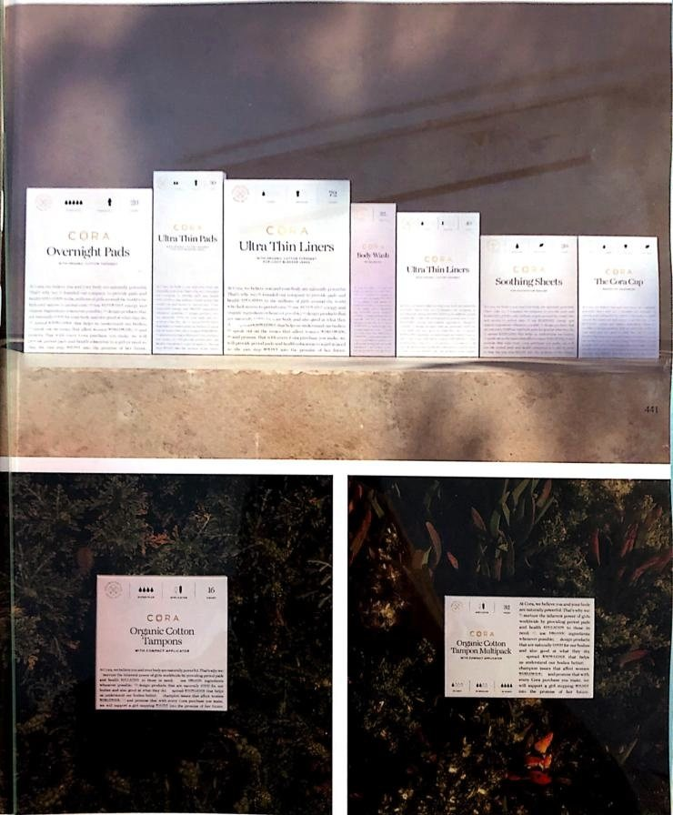
Study cues
- "The Birth of the Brand" and the rebrand cases later in the issue each answer a different question. What are the two questions?
- Choose one case and write down the media you can see. If all you can write is "looks great", what kind of record are you still missing?
Brand NO.36-生活使用手冊2：文創熱量
Scope. Issue 36 of Brand, subtitled "Life User Manual 2: Creative Calories". Almost nothing can be extracted from the contents page. The main text that reads coherently is an interview with Muji: choosing materials carefully, adjusting production processes, simplifying packaging, and the idea that "Muji is enough": everyday goods should aim to be useful, not to chase one season's strong tastes. A caption on another page refers to a David Hockney work in the Tate collection. So the issue cannot be treated as a feature on a single brand.
Main ideas
- The Muji section describes its goods as everyday necessities: clothing, homeware and food, plus in-store offerings such as books, a café and home furnishing layouts.
- The design standard in the interview is "enough" and being usable according to your own needs; materials and packaging are written into this standard.
- The same issue also has pages of artwork (Hockney, Tate, 2016). Under a cultural and creative theme, brand interviews and art plates can sit side by side.
- The other headings are only section names such as Brand and Brandirection. Those pages must be sorted by their images alone; do not write a theme essay for them.
Methods
- Match each of Muji's three practices (materials, processes, packaging) with an image you find in this issue. If you cannot find an image, note "the text says so; no image found".
- Open a separate column for pages that do not look like everyday goods (such as museum collections). Do not merge the two columns into one "lifestyle" conclusion.
- When borrowing the idea of "enough", write about one of your own assignments: at which action will the user feel it is just right? Do not redraw Muji's products.
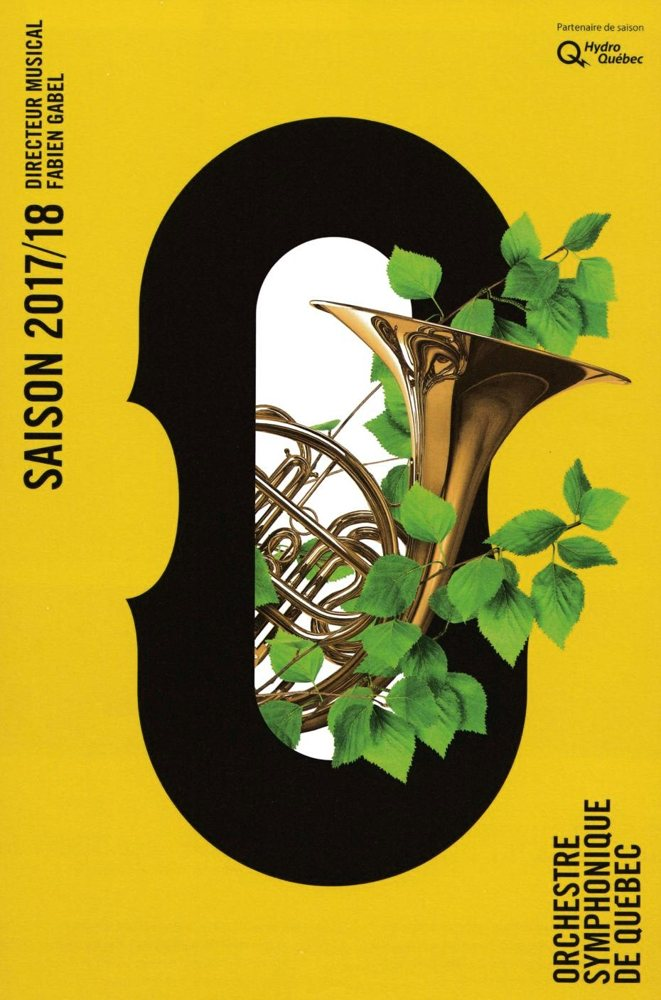
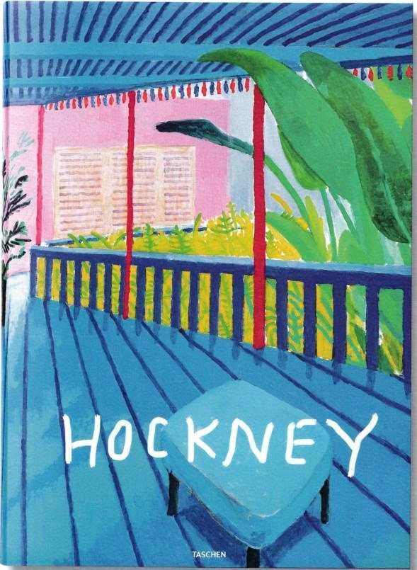
Study cues
- This issue has at least two kinds of material: brand interviews and art plates. How would you keep them apart in your notes?
- If you apply "having it is enough" to your assignment, you must point to which function is already enough, not just change a slogan.
Brand NO.37-字己
Scope. Issue 37 of Brand is titled "Type Self" (a pun on the word for "oneself"). It is a type-themed issue for visual research, not a typography textbook. The recognisable parts of the contents include classic typefaces (about pages 122–175), decorative typefaces (about pages 46–87) and a column of type design terms. One article treats handwriting as the source of type, and runs from cuneiform, blackletter and roman type to Chinese seal, clerical, running, cursive and regular scripts.
Main ideas
- The issue sorts type into categories you can look up: classic typefaces, decorative typefaces and handwriting-related lettering. The page numbers are for checking samples against each other.
- The article argues that handwriting has a long history and also changes with tools and culture; in the digital age, handwritten lettering is often used to signal the personal.
- The Chinese section lists five script styles as one way of classifying East Asian writing; it is not telling you to make one poster in each of the five.
- The other spreads are type specimens. Many captions cannot be extracted, so the specimens themselves are what you read.
Methods
- For each typeface, note three things: whether it is placed under "classic" or "decorative", whether the stroke endings are sharp or blunt, and whether it is used on the page as a heading or as body text.
- Use the history in the article only to help you name things. Do not copy "handwriting is the origin" into your design statement unless your assignment really adapts a form of handwriting.
- Reset a page with two lines of your own text: one line in a functional typeface and one in a warmer typeface. Compare the type sizes and white space of the two lines; do not trace this issue's letters.
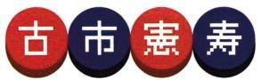

Study cues
- Classic and decorative typefaces are two groups of pages in this issue. What visible features do you use to tell them apart?
- If an assignment needs a "handwritten feel", would you change the strokes, change the tool, or just switch to a ready-made typeface? Point out where on the page this will show.
Brand NO.38-手工印刷
Scope. Issue 38 of Brand is titled "Handmade Printing". The readable article discusses letterpress: after Gutenberg it was widely used for books, it left the mainstream when digital printing rose, and it later reappeared on invitations, stationery and greeting cards. The article interviews Topress Letterpress, founded in 2014, about their letterpress research and commercial printing in mainland China. The contents also show issue 6 of RISO CLUB Milan and a small 2018 calendar.
Main ideas
- The article describes the features of letterpress as things you can see and touch: paper choice, foil stamping, embossing, colour, crisp edges and the impression in the paper.
- Here letterpress is a craft still taking on work, so the pages should show the studio, the paper and finished pieces, not just craft history.
- The same issue also has Riso (stencil-printed) publications and calendars. More than one printing method can sit side by side under "handmade printing".
- The text on many spreads cannot be extracted, so paper texture, registration and uneven ink must be read directly from the images.
Methods
- When looking at the images, note separately which areas are debossed or foil-stamped and which are just flat-printed photos. If you cannot tell, write "process not visible".
- When reading the Topress Letterpress section, copy down the kinds of work they do (research, commercial printing). Do not write "reviving handcraft" as your concept unless you have really chosen a printing method.
- If your course cannot print on a press, use this issue's categories to make paper sample notes: paper name, number of colour layers, and whether the text is printed on or pressed in. When you hand in, state which one you actually used.
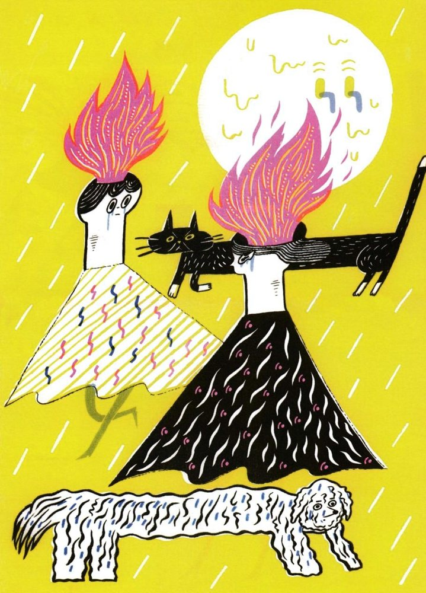
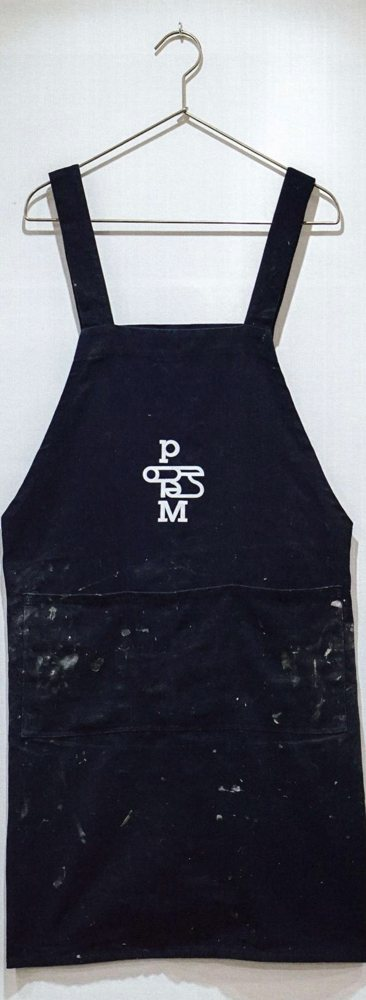
Study cues
- In a photo, what trace would you look for to identify letterpress, Riso printing and ordinary colour printing?
- Invitations and calendars both appear in this issue. If the same printing method is used on both, how will the amount of information differ?
Brand NO.39-物料進化
Scope. Issue 39 of Brand is titled "Material Evolution" and discusses how materials enter a brand. The opening describes a material's shape, texture and colour as the parts of a brand that can be sensed, and quotes Taku Satoh: the greatest respect you can show a material is to do your best to find its strengths. The conversations include Kashiwa Sato, Taku Satoh, Shin Akiyama and TAKEO, which has dealt in paper since 1899. Recognisable items in the list of works include a picture book for blind children, plateless printing on thin paper, a wood-edged side table, plastic capsules and stone stationery.
Main ideas
- The unit of this issue is materials and finished objects, not an abstract "texture". Paper, wood, stone and plastic each appear in different projects.
- The TAKEO example puts plateless printing together with thin paper, as an introduction to a collaboration between a paper company and designers.
- The conversations appear in groups: brand, book production and product development. Each group only explains its own materials; do not merge them into a single philosophy of materials.
- The opening also retells the old meaning of the word "brand" and of marks, then quickly turns to packaging and materials. The historical sentences are an introduction; the images that follow are what this issue wants you to see.
Methods
- For each work, write: the material's name, what it has been made into, and which property is revealed (thickness, translucency, weight, surface). If you cannot name a property, you have not yet understood the page.
- Use Taku Satoh's quote only to ask a question: does this work reveal the material's strengths, or is it a texture photo laid on top?
- If your own packaging or poster emphasises material, hand in a physical piece or state the paper name and finishing; do not just add a texture layer on screen.
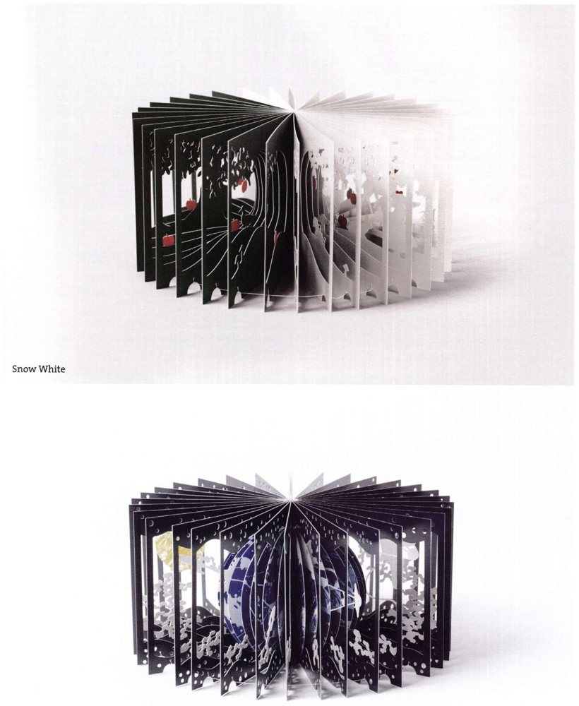
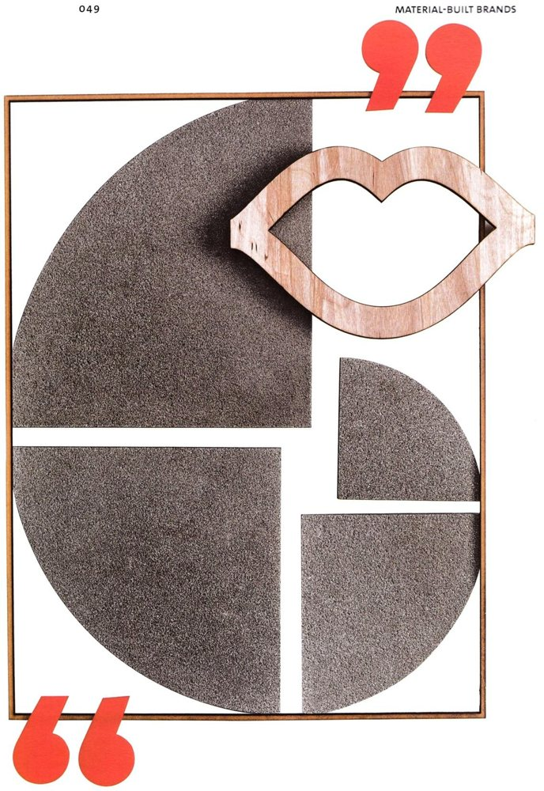
Study cues
- Choose a work from this issue, name one strength of its material, and say where the design places it for people to see.
- How should texture photos and real materials be labelled in an assignment so that no one thinks you actually used that material?
Brand NO.40-文化時光機1868-1988
Scope. Issue 40 of Brand is titled "Cultural Time Machine 1868–1988" and uses old images for visual research. The sections in the contents include Reshaping Brand Traditions, Fadeless Fascinating Retro, Shanghai Retro Illustration and Encounter with Old Days. One readable article introduces the history of Marvel Comics and how Taschen compiled old comics into books; another passage describes folk culture as a resource later generations can reuse. The span of years is the theme of the issue, not proof of the date of every page.
Main ideas
- The issue collects old paintings, old comics and old brand graphics and shows how they are rearranged into books and magazines.
- "Shanghai Retro Illustration" is a separate section. It sits beside the American comics article; do not merge them into one retro style.
- The Marvel article treats the characters, the original years, and the later films and reprint books separately. You can separate the images the same way: original artwork, re-edited book, new brand use.
- The text on many spreads is incomplete, so copy dates and sources from the captions; if you cannot find them, mark them as unknown.
Methods
- For each old image, note three things: the approximate date (write "unknown" if unknown), its original use, and which section this issue places it in.
- If you want to borrow the linework of the Shanghai illustrations or old comics, first write down whether you are keeping the subject, the drawing technique or the colour, then redraw one detail on your own topic.
- Before you write "tradition" into your design statement, you must be able to point to the object or the lettering on the image that it comes from. If you cannot, delete the word.
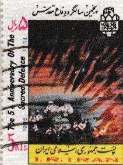
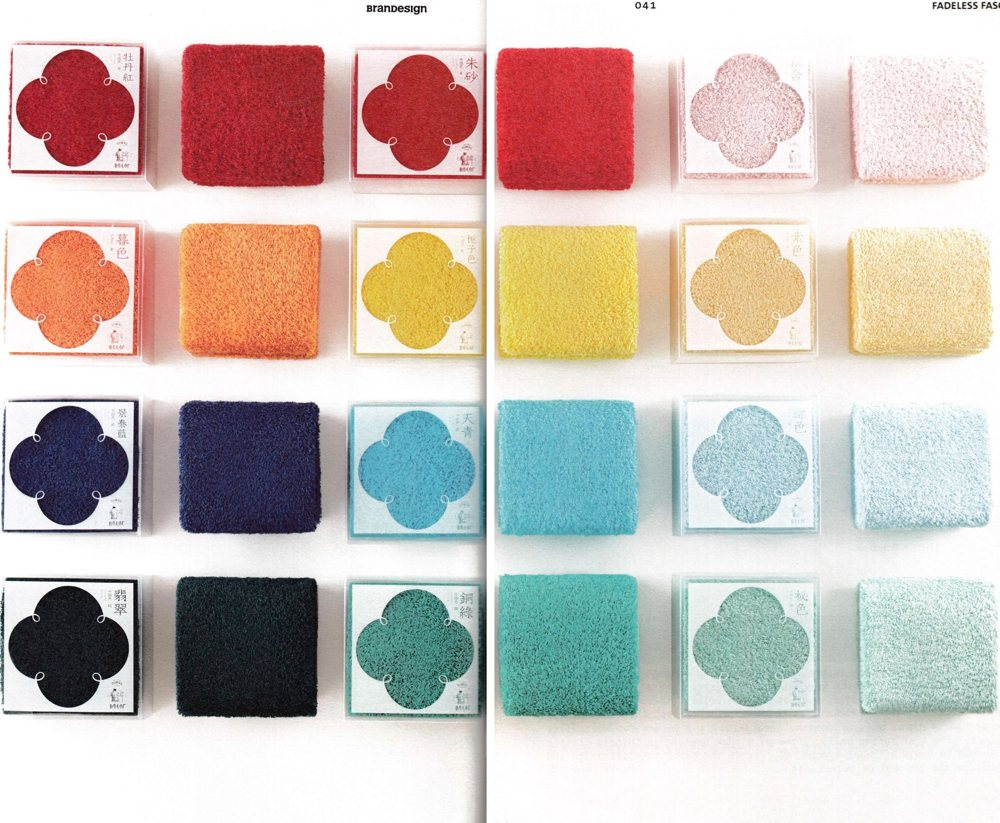
Study cues
- Shanghai illustration and old American comics appear in the same issue. Which two section names would you use in your notes to keep them apart?
- Choose an old image and write down one piece of information you do not know (date, artist or original use). How does this gap limit what you can borrow?
Brand NO.41-看圖説話，你的信息時代
Scope. Issue 41 of Brand is titled "Telling Stories with Pictures, Your Information Age". Only section names such as "typesetting" and posters can be extracted from the contents, which is not enough to rebuild the structure of the issue. The most complete readable article is a record of a visit to Yoshihisa Shirai's exhibition "Typographic Composition as Form" at ggg gallery: books are opened flat or stood upright, some pages are rigorous, and others use embossing and fluorescent colour. The article also notes that he was art director of IDEA from 2005 to 2015.
Main ideas
- This article treats typographic composition as an exhibition you can walk through: covers, inside pages, colour and craft are displayed in separate zones.
- Yoshihisa Shirai's role in the article is that of a layout designer for books and magazines. The article describes an exhibition visit, not an information design handbook.
- "Telling stories with pictures" in the title matches the charts, posters and typeset pages collected in this issue. If the data for a specific chart is missing from the text, look only at its structure.
- Leave the missing parts of the contents blank. Do not use the words "information age" in place of articles that could not be extracted.
Methods
- When looking at a typeset page, draw the path of the eye: where it lands first, which column it reads next, and where the images are. Use this path to compare two works; do not trace the letters.
- Borrow only one observation from Shirai's exhibition: one person's books can be very strict and very loud at the same time. Do one of each across two pages of your own assignment, and note which page should be quiet.
- If a page looks like a chart, write down what it compares. If you cannot name what is compared, treat it as a decorative image and do not call it information design.
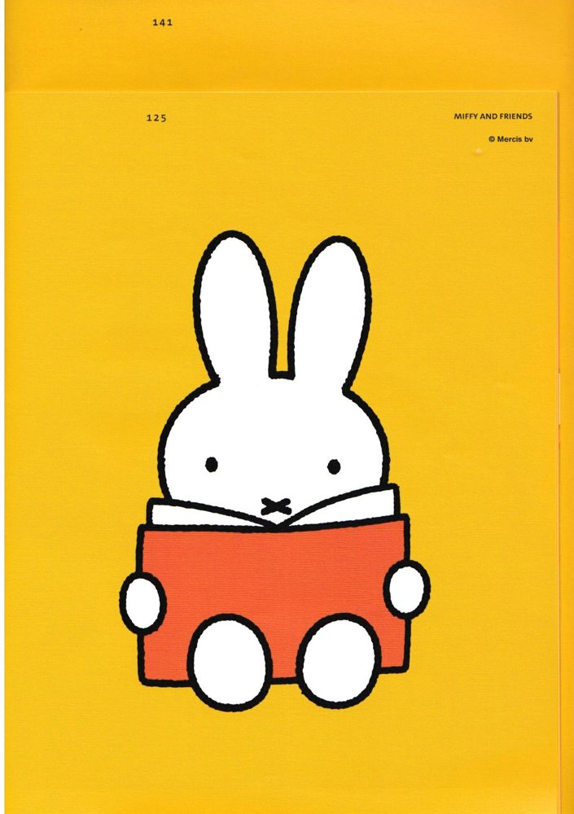
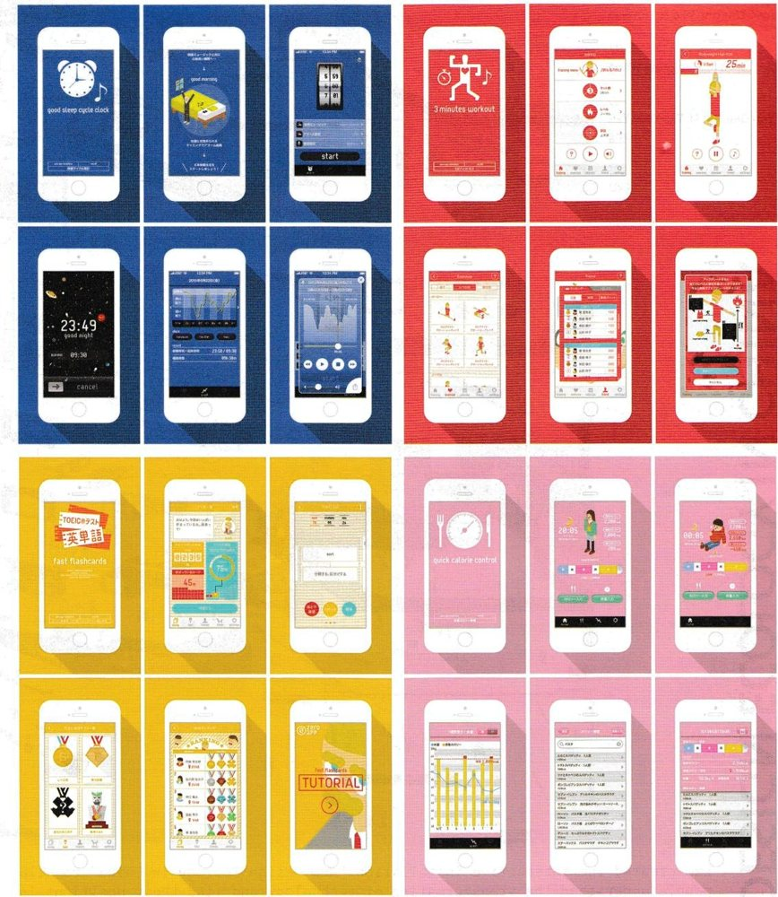
Study cues
- Which two parts of a book (cover, inside pages, colour or craft) does the exhibition record "Typographic Composition as Form" let you see?
- What makes an image "tell a story"? Using this issue or your assignment, point out which sentence an image replaces.
Brand NO.42.-你好，藝術pdf
Scope. Issue 42 of Brand is titled "Hello, Art" and is an introduction to art and design for general readers. One article runs from the Latin roots of the word to the Renaissance, then to the Lascaux caves, writing and printing. It then uses William Morris and the Kelmscott Press to explain Arts and Crafts books, and cites William Addison Dwiggins's use of the term "graphic design" in 1922. Another page shows food packaging: a dango package that comes with a folded paper piece by COCHAE.
Main ideas
- The history article links graphic design to printed matter and argues that from the mid-20th century it moved into advertising and packaging. This is the order of the article's account.
- In the article, Morris stands for the idea that books can be refined, strongly styled and still sell.
- The dango packaging page puts a brand, a food and a playful piece of paper together. It is a design example in this issue, not an illustration for the history essay.
- The text on the other pages often cannot be read through. For an introductory magazine, cross-check: one short article, one real object.
Methods
- From the history essay, take only three names (Morris, Kelmscott, Dwiggins) and write the object each corresponds to in the article (a book, or a word). Do not expand this into a design history assignment.
- When looking at the packaging page, note separately the text on the box, the free paper piece and the food itself. Which of the three is speaking to people?
- If you want to make "packaging with a handmade touch", first decide whether the handmade part is folded paper, a stamp or the paper itself, then do only that one.
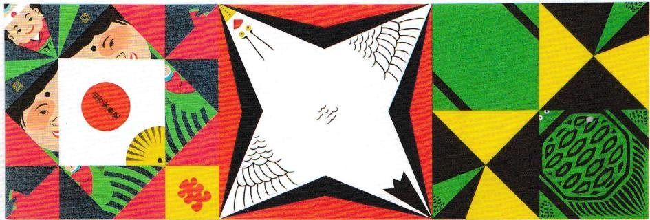
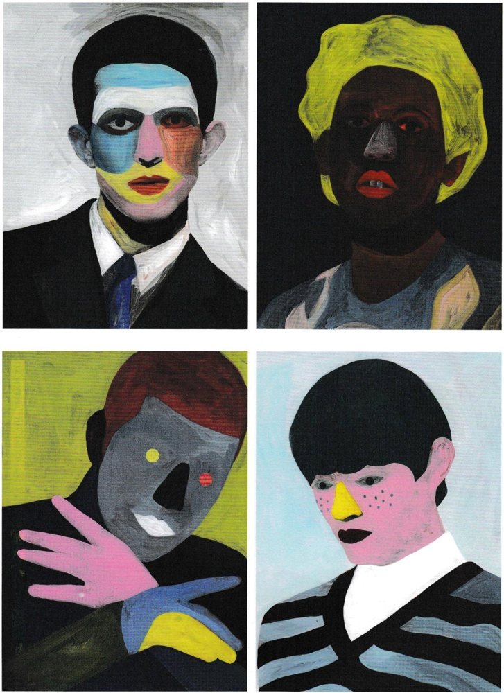
Study cues
- Is Dwiggins mentioned in this article because of the kind of thing he designed, or because he wrote down a term?
- If the folded paper were removed from the dango page, what function would the packaging still have? Answer only from the objects you can see.
Brand NO.43-小物志
Scope. Issue 43 of Brand is titled "Small Things" and looks at how small everyday objects are designed into things you can buy and play with. The main readable example is the Barcelona brand DOIY (Do It Yourself), started in 2008 by Elodie and Jaime, who felt that home products on the market were too dull. Examples include the Hestia series (temple columns made into incense holders and similar objects), the poster 《人生中 100 件必做的事情》, and a 30-day card set where you tear off one card a day. The contents ask a question: with the market always changing, how does DOIY decide what to make?
Main ideas
- The issue introduces small objects through brand stories and product photos. DOIY's products turn a cultural image or an everyday task into a usable object.
- Hestia borrows Greek temples and mythological figures and brings them to the dining table and the home, an example where the source of the form can be identified.
- The poster and the 30-day cards print "go and do one small thing" onto paper goods you can tear and complete day by day.
- The article stresses that the prices let ordinary people afford them, and says the line between function and form is deliberately relaxed. This is the brand's own product claim and applies only to this brand's profile.
Methods
- For each small object, write: what everyday action it started as (lighting incense, ticking off a day, sending a message), what image has been added, and whether that image gets in the way of use.
- When looking at the 30-day cards, draw the order of use: which day you tear, where the instructions are written, and how the box shows how many are left. Only a clear sequence counts as information design.
- When borrowing a cultural image, state where it comes from and which part of the product it is used on. Just sticking on the outline of a statue of a god does not count as finished.
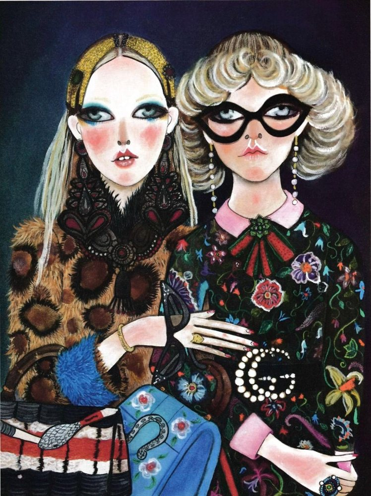
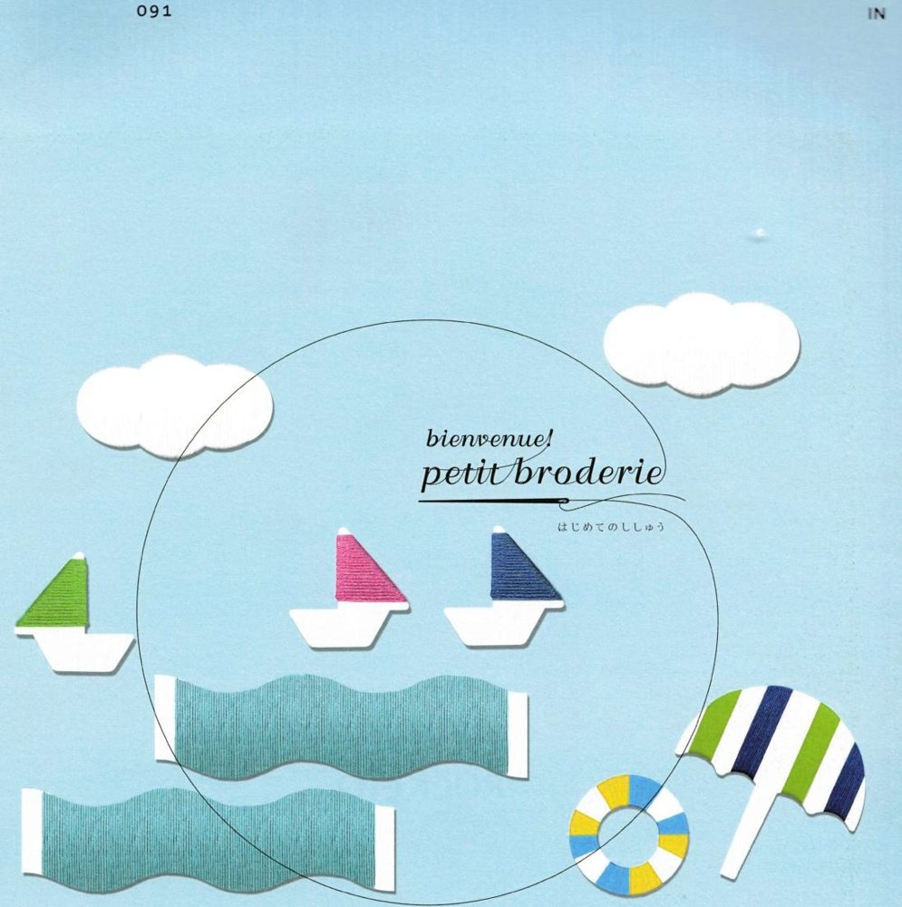
Study cues
- Of DOIY's poster and the 30-day cards, which one asks the user to keep doing something the next day?
- If you turned a famous building into a small home object, which feature of the building would you keep so that people recognise it without the object losing its use?
Brand NO.44-貓狗日誌
Scope. Issue 44 of Brand is titled "Cat and Dog Diary" and uses cats and dogs as the subject of a whole issue. A long article describes the cat as an image that was once worshipped, and the dog as an animal that works as a companion, guard, herder and police dog, and mentions that dogs mainly distinguish blue and yellow. The list of works includes illustration, exhibitions and brands, such as Super Bubble Cat, Futoi Neko and A Dog is Life, plus conversations with Nagasaki Cat, Yeji Yun and Andy Shaw.
Main ideas
- This is a themed issue: the same animal appears in illustration, packaging, posters and interviews, and the forms can be completely different.
- The long article describes the roles animals play in everyday life to accompany the images; it is not a zoology book. The line about blue and yellow is the article's own claim.
- The people in the conversations include cat brands as well as illustrators and designers. Keep notes on interview pages and work pages separately.
- The section names in the contents are confused, and many pages can only be read as images. When looking at them, note whether each is realistic, cartoon-like or almost abstract.
Methods
- Choose three images of cats or dogs and compare only how the ears, eyes and body outline are simplified. Describe the degree of simplification as "breed still recognisable" or "only a symbol left".
- The list of working dogs in the long article can be used to check what an image is doing: companionship, warning, or cuteness. Do not copy the list as copy for your poster.
- If your assignment uses an animal as a mascot, state the communication task it must carry out. If it is there only because cats and dogs look nice, try again with an object related to your topic.
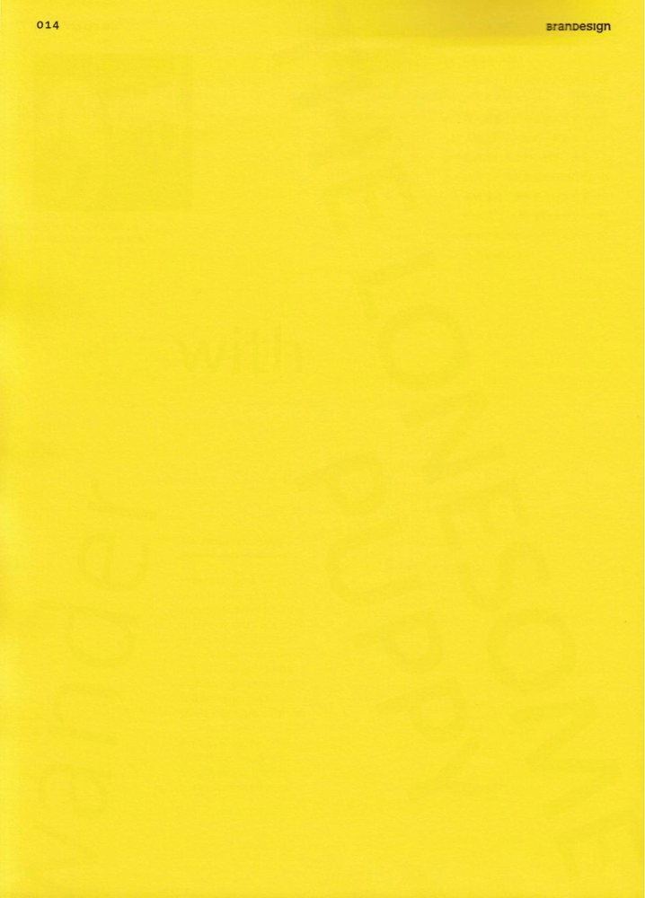
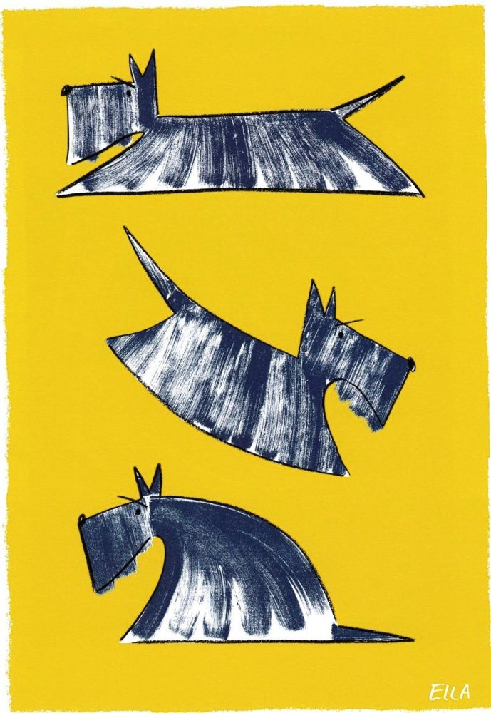
Study cues
- In the same issue, a cat can be drawn as sacred or as comic. Which two visual features do you use to tell these two approaches apart?
- If the animal shape were removed from a mascot, what information would the brand still have? Try answering with any page from this issue.
Design 360 雜誌(1)
Scope. The Design 360° magazine in the bookshelf. Almost no contents or articles can be extracted from this item; the only text is a repeated membership notice, and there are no usable plate captions. Use it by leafing through it as an image magazine: what the cover, feature spreads, typefaces and sections are should be judged from the printed pages in front of you.
Main ideas
- The issue's theme, authors or columns cannot be rebuilt from this text. Leave the missing parts blank.
- The magazine can still be used for visual research: an issue usually has a cover, contents, features, work and advertisements, and you must mark them yourself on the physical or scanned pages.
- The repeated membership text is noise on the page, not an editorial view.
- Until the real contents are restored, do not name a design theory for this issue.
Methods
- When you open it, note only three pages: the cover, one spread and one column of body text. For each, write whether the largest element in the layout is a photo, a headline or a block of colour.
- If two facing pages differ greatly in style, first assume one belongs to a feature and the other to an advertisement, then check against page numbers or section names. If you cannot check, mark both pages as "unclassified".
- When describing this issue to classmates, quote only observations you have marked with page numbers. Impressions without page numbers do not go into your notes.
Study cues
- When the text is unusable, which three visible decisions can you still note from a page?
- How should you write notes so that "I think this issue is about innovation" is not mistaken for a sentence from the book?
Gallery 形錄 全球最佳圖形設計 vol.09
Scope. The ninth volume of 《Gallery 形錄》 is a collection of graphic work from around the world, organised by category. The contents cover book jackets, calendars, cards, CD sleeves, environmental display, corporate identity, miscellaneous, packaging, posters, point of sale, publications, promotional items and web pages. Two cases in the text can be read in full: the 2010 Taiwan Designers' Week (Ken-tsai Lee; the themes run from "Design and Beyond" and "Enjoy Design" to "Care"), and the new packaging for Maison Orphée cooking oils and condiments in Canada (Lg2boutique, which split the products into an everyday range and a range for keen cooks).
Main ideas
- Use an annual by browsing one medium at a time. Posters and packaging by the same studio appear in different chapters, so do not just memorise a style.
- The Taiwan Designers' Week entry gives the theme line, the event dates and the venue, plus the client, studio, illustrator and region. It shows you how an identity is carried into advance ticket sales and a special issue.
- The Maison Orphée text splits the products into a practical range and a more refined range, and the packaging has to let people tell them apart on the shelf. Both the bottle shape and the label are described as part of this decision.
- Each entry often ends with the country and the job titles. So the ninth volume can also show you how credits are written in different regions.
Methods
- First pick a medium you are working on (for example packaging or posters). Browse only that chapter, look at six pieces in a row, and note the client and the country.
- When you read Maison Orphée, make two columns and copy out the visual differences used for "everyday" and for "refined". Then apply just one difference (colour, bottle shape or type) to two products of your own.
- For an event identity, copy a set of real information (date, place, ticket price or how to get in) and set it in the layout. Do not compare a poster with no information against this entry.
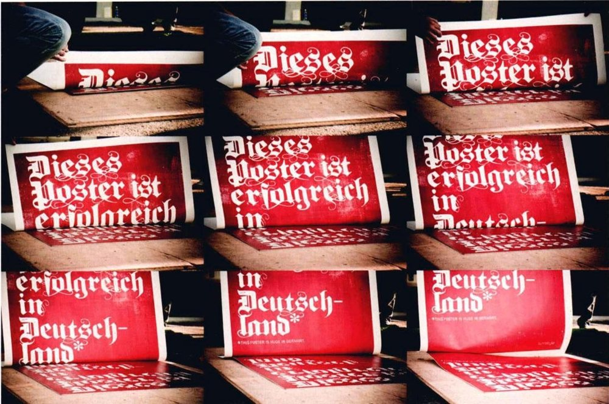
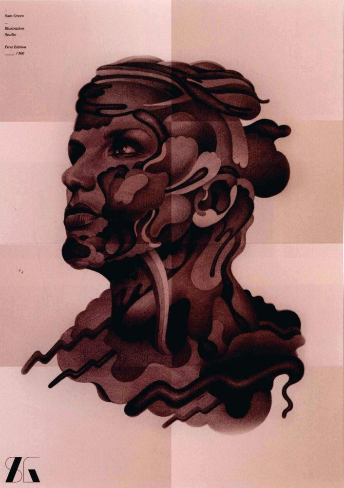
Study cues
- Book jackets, packaging and posters are three separate chapters in this annual. Which chapter should your assignment go in? Name the setting where it will be used.
- Maison Orphée uses two ranges to solve the choice on the shelf. If you only have one pack, what else could tell people it is an everyday product?
IDEA 377
Scope. Issue 377 of the Japanese graphic design magazine IDEA. The features include "A New Century of Graphic Design: The Stances of 21 Designers" and "Sprout of Japanese graphic design". The same issue reproduces books and posters, such as books by Tahi Saihate, the 2016 graduation show of Kuwasawa Design School, an art event in Kyoto bathhouses, a food event on Mount Rokko, and a talk on 12 February 2017 hosted by Barubora on the internet and the graphic designer.
Main ideas
- This issue puts interviews, talks and a large amount of printed matter together. The "stances" of 21 people form a profile feature, not a shared manifesto.
- The talk asks how designers' lives and commissions have changed now that the internet is a basic condition of work, and what is left of the work when the screen comes first. The questions are printed in the magazine; for the answers you have to read the talk itself.
- The inside pages reproduce many posters, book jackets and event details (time, place, ticket price). These are material for studying real layouts.
- The comments sometimes praise handwriting, repeated making and playfulness. Those remarks are about one particular group of works, so read them together with the works.
Methods
- Pick one designer from the feature and note only: the title the magazine gives them, the client of one piece, and the largest words on that piece. Do not imitate the look of the whole page.
- On the talk pages, first copy the questions as two sentences, then decide which one you agree with. Next to the one you disagree with, attach an example from your own assignments.
- When you copy an event poster, cover the graphics and set only the date, place and name. Only once the information is clearly set should you decide whether you need an image.
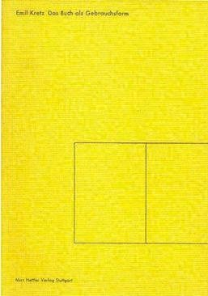
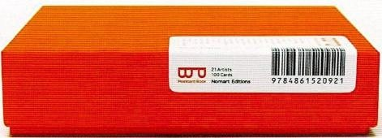
Study cues
- Why can "The Stances of 21 Designers" not be boiled down to a one-line definition of this generation of designers?
- Choose an event poster and cover the image. Can viewers still tell when and where? Which item is missing?
Novum201901
Scope. The January 2019 issue of the German graphic design magazine 《novum》. The editorial, "Credo, ergo sum", discusses facts, the reality each person believes in, and the people who sort online content in the documentary The Cleaners. The contents of this issue include Wunderkammer, showroom, the 100 best posters of 2018, Social Design, the Jewish Museum Frankfurt, Simple Design for big Stories, the Zurich theatre, Design made in Germany, and a paper feature (special greeting cards, paper as a canvas, paper itself, the environment).
Main ideas
- The editorial opens the issue and discusses how public reality is selected and interpreted. It does not stand in for the conclusions of the features that follow.
- The 100 best posters, social design, the museum identity and the theatre identity are parallel cases, each with its own client and purpose.
- The paper feature states the paper specifications clearly. One page notes a white linen paper, 350 g/m² (Reflex).
- The contents page includes Horst Moser's Cover Stories. You can compare how the cover presents the issue with the editorial, without merging them into one piece.
Methods
- From the editorial, take only one example you can retell (for example content moderation, or the story about shooting the pheasant). Then turn to the poster or museum pages and keep separate notes.
- On the paper pages, copy three items: the paper name, the weight, and the kind of printed matter it is recommended for. If your assignment specifies a paper, use the same three items.
- Choose three of the 100 best posters and compare only how much information they carry: a single word, a date and place, or a paragraph of text. Do not redraw the posters for the comparison table.
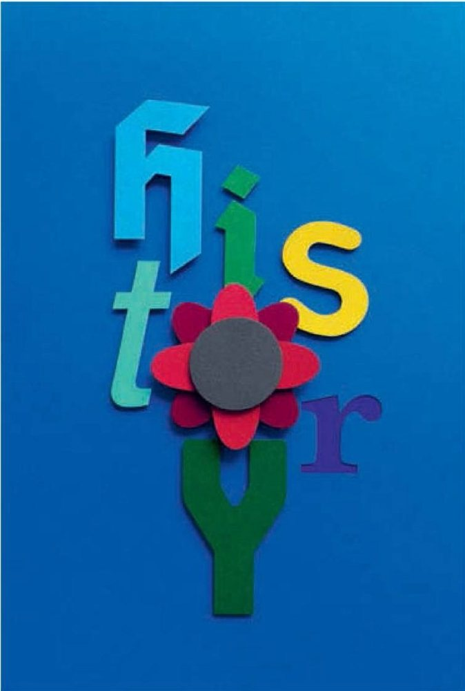
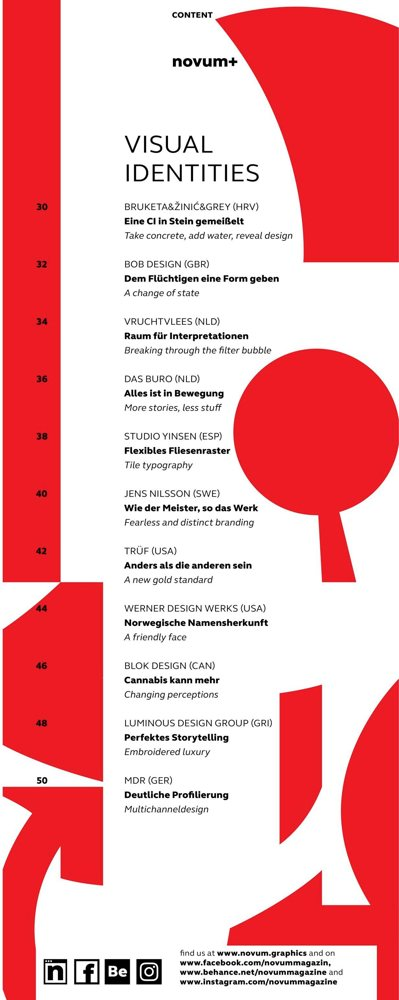
Study cues
- Do the "reality" of the editorial and the 100 best posters ask you to look at text or at work? How would you split your notes into two columns?
- How would a 350 g/m² linen paper differ in feel and printing from the text paper of a thin magazine? Compare it with a paper you can actually touch.
APD9亞太平面設計年鑑
Scope. Volume 9 of the 《APD 亞太平面設計年鑑》, which collects work by category. The categories that could be sampled are mainly visual identity, print design and posters. Identity examples include Shisu, Beautiful Times SPA, NOSIGNER's i.Lab, Kong Wenkai's "Siyin" ("Four Tones") Chinese study class, Biaoben ("Specimen"), the SGDA members' annual and the GDC 20th anniversary. The print pages also include a guide to the daily care of a leather sofa. There is also a "Design Class" page, credited to Zhang Hao, laid out with lesson texts such as the nursery rhyme 《月光光》 ("Bright Moonlight").
Main ideas
- The identity pages follow a fairly fixed format: project name, design company, creative director, designer, client. Read that line first, then look at the logo.
- Print design is not limited to posters. The sofa care entry sets out precautions, daily cleaning and the properties of leather as readable instructions.
- Posters have a chapter of their own. The class page sets poems or nursery rhymes in the layout, with a lot of text and short lines.
- An annual gives you finished pieces side by side. If an entry's "concept" is only a company name, do not invent a story for it.
Methods
- For each identity, copy one decision in the logo: the letters, a single shape, or the relationship between type and image. Mark any that show none of the three as "unclear".
- Read the sofa care page as information design: are the heading, warnings and steps kept apart? Use the same structure to lay out a set of instructions of your own.
- From the class page, borrow only "how an existing lesson text is broken into lines". Reset it with your own text, and do not use the illustrations on the page.
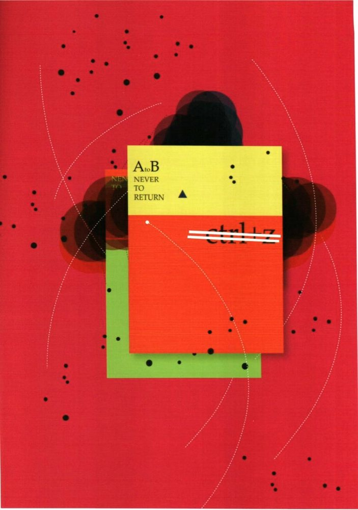
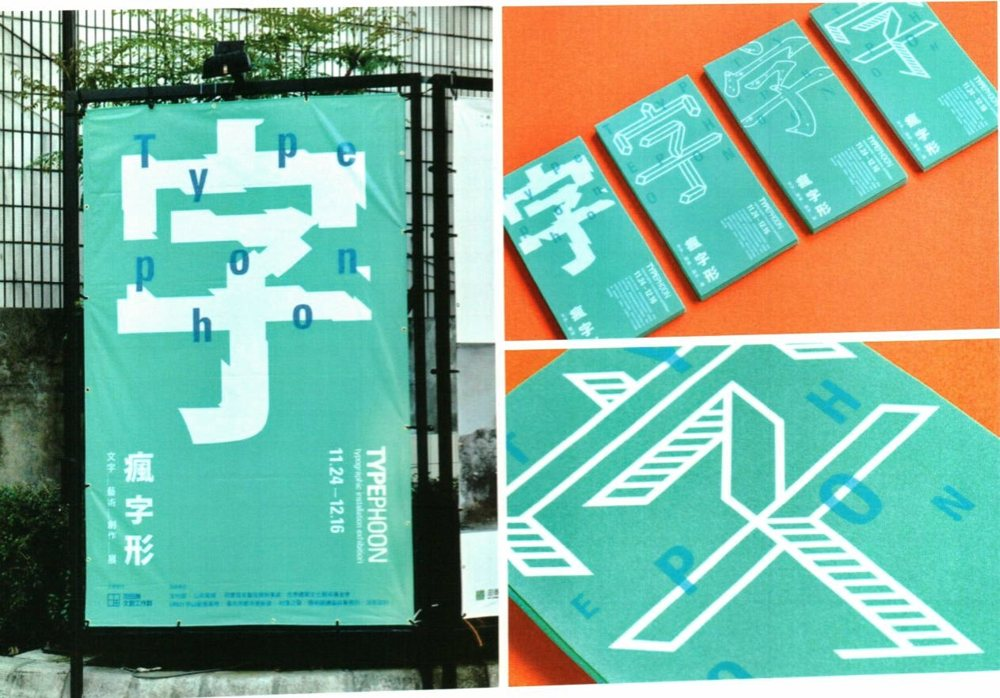
Study cues
- How does what a reader has to do with a visual identity differ from what they do with a care guide?
- If 《月光光》 is only used to fill the layout, compared with treating it as text to be read aloud, what would you change first in the typesetting?
APD5亞太設計年鑑
Scope. Volume 5 of the 《APD 亞太設計年鑑》. The text here is mainly judges' profiles and congratulatory messages, not captions for the work. The people named include Kim Hyun-tae, Wang Shouzhi, Lawrence Chong, Andy Johnson, Sven Baker, Chen Chaohong, Chan Wing Kei, Hei Yiyang, Richard B. Doubleday, Jiang Jian and Nereida Tarazona Belenguer. Article titles include "Can Asia become the new centre of graphic design? That is for us to decide." and "A Brief Look at the Hong Kong Design Industry", which divides the industry into a budding stage in the 1960s, a flourishing in the 1970s and 1980s, and a return to the creative basics in the 1990s.
Main ideas
- The opening section uses profiles to introduce this volume's judges and well-wishers. The profiles describe careers and positions; they are not tutorials on their design methods.
- The Hong Kong design article uses three decades as its own periods. This is the article's division, useful for seeing how the author narrates the industry, not a standard design history.
- "That is for us to decide" is the title of one article and expresses the writer's attitude. The work pages are not explained by this sentence.
- The work pages mark roles with abbreviations (creative director, interior, furniture, photography, styling, client and so on). When there are many images and little text, the abbreviations are the only index.
Methods
- When reading the profiles, note only the identity each person is introduced with (education, association, consultancy). Do not rewrite a profile as your own design philosophy.
- Label each of the three Hong Kong decades once, using the article's own words. If you want to quote it, state that this is the article's division.
- When browsing the work, check the abbreviation list first, then write one line of roles under each image. Mark images with no client or title as "image only".
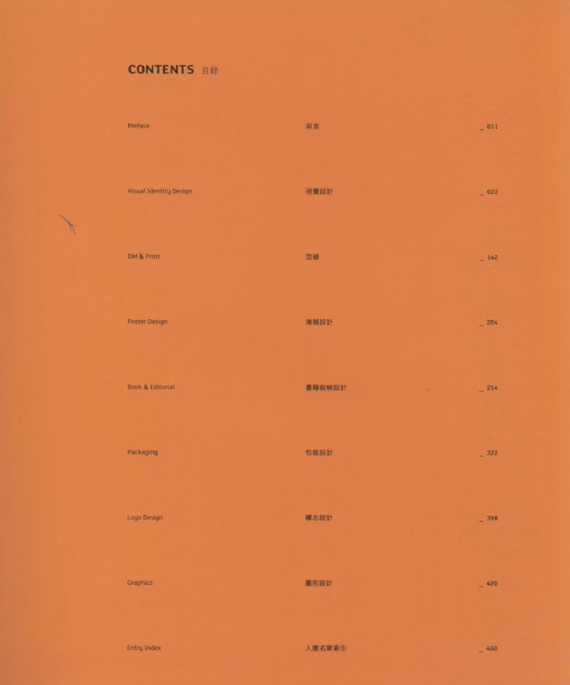
Study cues
- The three decades in "A Brief Look at the Hong Kong Design Industry" are the article's own periods. What source note do you need to add when you quote them?
- For an annual page with only an image and no client name, which two things can you still honestly record?
中國品牌設計年鑑 2013
Scope. 《2013 中國品牌設計年鑑》 collects logos and brand visuals. Each entry usually has a "design statement", the brand owner, the design company, the creative director and the designer. The book opens with a guiding line: a brand is a living thing that has to be raised with care and feeling. Most cases are clothing, shoes, knitting yarn and food and drink, for example 3+7, Huashang Liying, Xindi, the sds handicraft bag, Xiyangyang knitting yarn, KORS VIGOTTI, Shichirin Yakiniku Honpo and MIXVI.
Main ideas
- The statements often break a logo down into sources: a number, a Latin letter, a hand, a high-heeled shoe or a curve. They then say this stands for elegance, internationalism or the character of the trade.
- The same company can appear several times in a row, with very similar sentence patterns. Read these as a studio's way of justifying its logos.
- The Xiyangyang knitting yarn entry says the old logo was dated, that cultural patterns needed to be added, and that the packaging and shop were redone at the same time. This is one of the few statements that mention where the design is used.
- The MIXVI statement says that, at a later stage, the system has more than the original logo: other elements can also be used as the logo. This is one approach to an identity system, and it is described in that entry.
Methods
- Pick three statements and cross out the interchangeable adjectives (perfect, international, elegant). The statement is only useful if the sentences that remain still match that one mark.
- For each logo, note just one visual source (number, letter, object) and the shape it was turned into. Repeat this step with your own brand name; do not trace their logos.
- If a statement mentions packaging or a shop, check whether the images show those applications. If there are no images, write "in the statement, not seen in the images" in your notes.
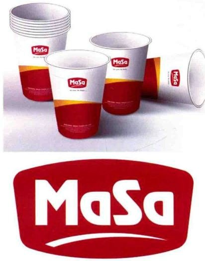
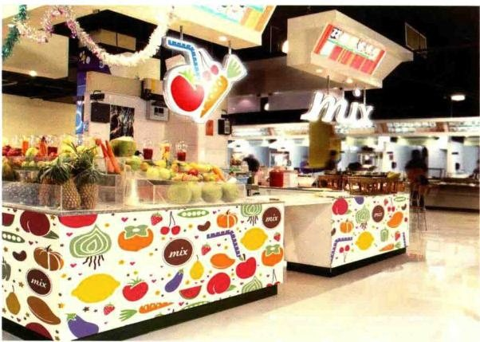
Study cues
- Take a statement about "perfect elegance" and cover the brand name. Could it still match only this one mark?
- MIXVI says any element can be the logo. If that is really true, how do viewers recognise that it is still the same brand?
日本字體與平面設計大獎年鑑
Scope. This is an awards annual for Japanese typography and graphic design, divided into the Grand Prize, special awards and best works. One of the Grand Prize graphic works is Kotaro Hirano's environmental advertising for the 《每日新聞》: during Golden Week in May 2002, adverts were inserted into the news text over two days, one on "water" and one on "green", with sponsors including Sapporo Breweries, TOTO and Toray. The judges' preface also mentions Katsuhiro Kinoshita's series "With and without IKKO TANAKA", a tribute to Ikko Tanaka, which won a best work award and competed hard with the Grand Prize. Names such as Nisshin OilliO and maruho can be seen among the identity projects.
Main ideas
- The idea behind the Grand Prize work is set out in the acceptance speech: what if an advert were inserted into the middle of an article? The advert raises questions about water and green, the news beside it supplies the data, and the sponsors explain what they are doing.
- In the design, water drops and green shapes mark the theme of each page. The shapes are scattered through the articles, linking the news text and the adverts.
- The speech stresses that this meant working with the newspaper to change word counts and columns. The conditions of the work include editorial cooperation, not just a picture.
- The other pages show award-winning adverts and identities, for example work by Rishi Takahashi and Shin Matsunaga (including Ginza Graphic Gallery). The typography awards and the graphic awards are in the same annual.
Methods
- As you read the speech, draw a simple plan of the newspaper: where the news is, where the adverts are, and where the water drops appear. Use boxes for the plan; do not trace the original.
- When comparing the Grand Prize with the Ikko Tanaka tribute series, write only what the judges' preface already says: one won the Grand Prize, the other won a best work award and was in close competition. Do not supply reasons for the judges.
- On the identity pages, note the logo and its applications (packaging, signs, printed matter) separately. If only a logo is shown, do not assume the whole system is in the book.
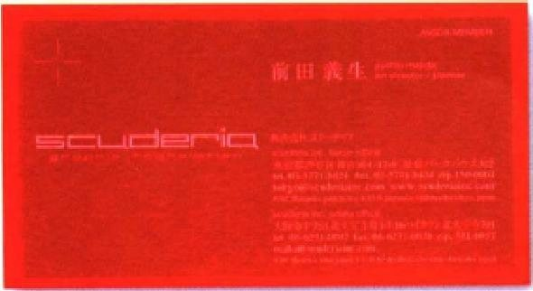
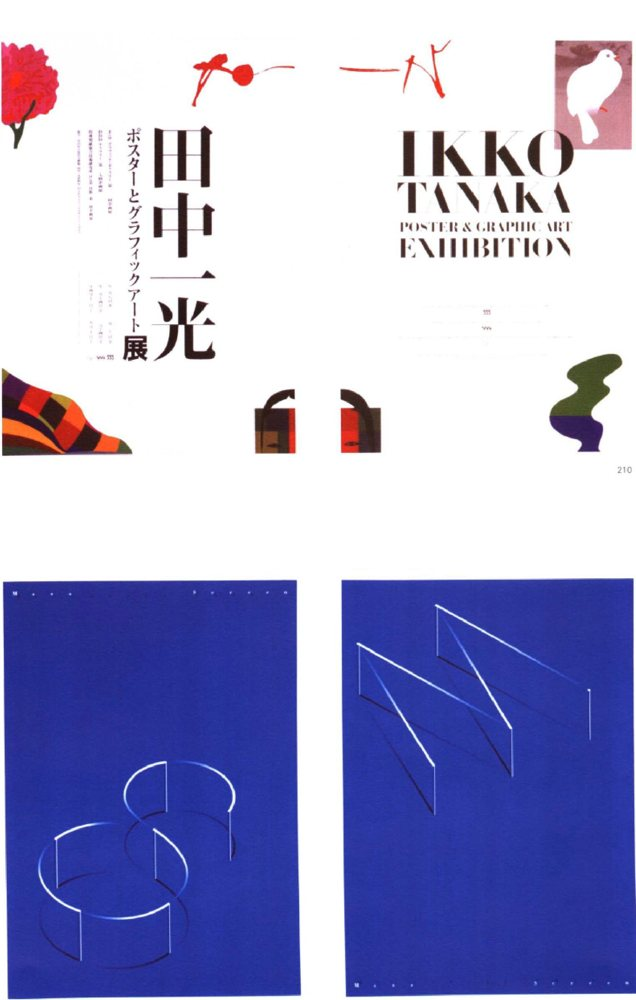
Study cues
- If you removed the news data beside Hirano's adverts, what would be left? Answer using the division of roles described in the speech.
- In this work, is the job of the water-drop shape to mark the theme or to decorate? Which sentence tells you?
國家博物館-仙山圖特展
Scope. A special exhibition catalogue from the National Palace Museum on paintings of immortal mountains: sacred islands in the sea, pavilions, gathering herbs, meeting immortals and ascending to immortality. The exhibit notes cover the Song kesi silk tapestry Pavilions on the Immortal Mountain, the Ming painter Wen Boren's Fanghu, Gathering Herbs on the Immortal Cliff attributed to Li Tang of the Song, Shi Rui's Xuanyuan Asking about the Way and others, with an essay, "Exploring Paintings on the Theme of Immortal Mountains". This is a book for looking at paintings: use it to observe how clouds, buildings, symmetry and empty space turn a place into a world you cannot reach.
Main ideas
- The catalogue gives each work's inscriptions, size, seals and the source of its subject, for example the names of Fanghu, Penglai, Fangzhang and Yingzhou in different texts.
- Pavilions on the Immortal Mountain uses woven silk tapestry to show terraces, people drinking together, clouds and distant mountains. The note points out the left-right symmetry with variations, and the use of clouds and roof ridges to show the immortal realm.
- Wen Boren's Fanghu is a hanging scroll on paper, with the artist's own inscription and a poem by the Qianlong emperor. The scroll is very narrow and the mountains are stacked vertically.
- Works on the same theme include gathering herbs, receiving scriptures and asking about the Way. The figures do different things in each painting, so do not read them all as landscapes.
Methods
- For each work, note the medium (silk tapestry, hanging scroll, album leaf), whether the tallest building is at the top or in the middle, and whether clouds separate near from far.
- When reading the textual research, copy only the one sentence that relates directly to the painting (for example, that Fanghu is a mountain in the sea). Leave the research in the catalogue; a poster does not need to restate the genealogy of the immortals.
- If you borrow an immortal-mountain composition for a layout, borrow just one feature: narrow vertical stacking, or symmetrical pavilions. Reset it with your own subject; do not trace the original.
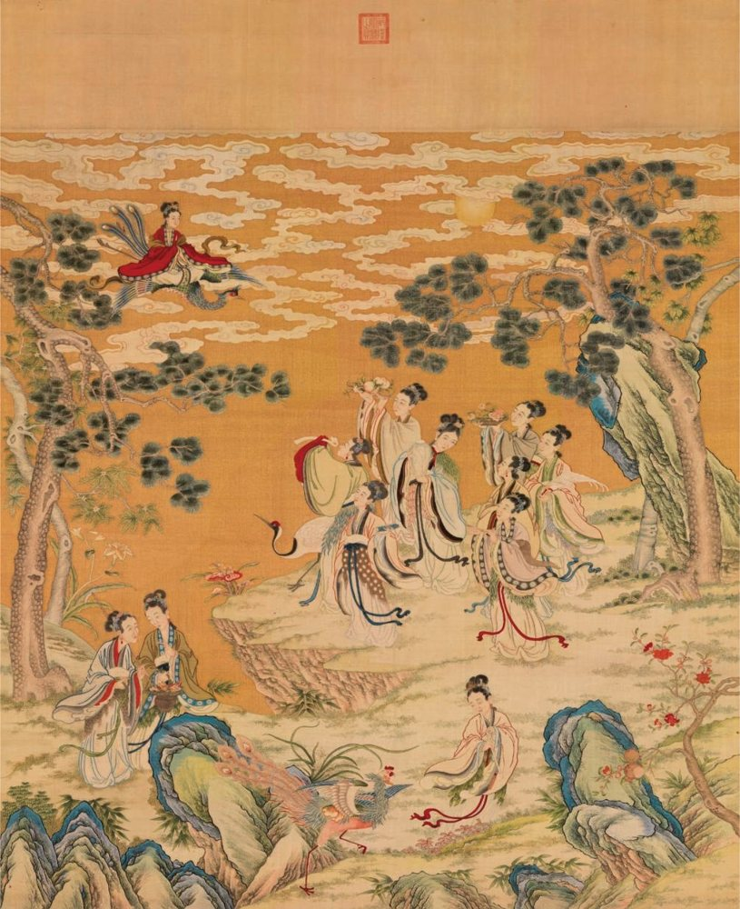
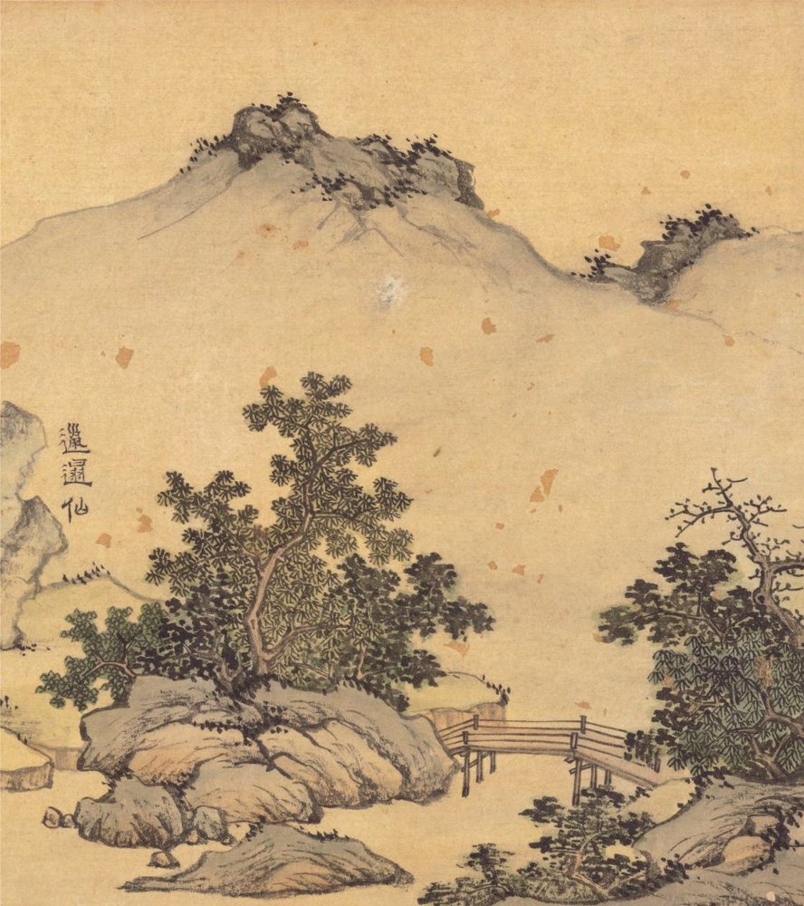
Study cues
- The silk tapestry pavilions lean towards left-right symmetry; Wen Boren's work is a narrow hanging scroll. How would this difference affect the way you borrow the composition?
- If the figures in a painting are gathering herbs, or drinking together in a pavilion, is the mountain still the main subject? Explain using one exhibit.
國家博物館-宋末民初上海畫壇
Scope. A catalogue of a special painting exhibition at the Palace Museum. The title says "late Song", but the headings and exhibits inside cover the Shanghai painting scene from the late Qing to the Republic: Zhang Xiong's landscapes, Ren Bonian's bird-and-flower fan leaves, Sha Fu's figures, Ren Xun, Wu Changshuo, Yang Borun, Lu Hui, Gu Yun, Wu Guxiang, Qian Hui'an's set of twelve figure screens and more. The notes discuss the commercialisation of painting and calligraphy, collaboration in painting societies (for example eleven artists painting Going to the Peach Banquet together), and a painting by Wu Changshuo dedicated to a Japanese patron, Mr Hashimoto, which shows that Shanghai painting was sold abroad. For research, go by the painter and dynasty given on the plates.
Main ideas
- Many exhibits are fan leaves, album leaves and screens, not just large scrolls for hanging. The format itself shapes the composition.
- The notes treat patronage commissions, painting for the market and group collaboration as different situations. Ren Yi's Chen Ping Dividing the Meat is listed as a market work, while Wu Tao's album leaves are listed as more traditional patronage.
- With a collaborative painting, count the number of artists and see who wrote the inscription. A single sheet by eleven people and a fan by one person will not have the same visual focus.
- Inscriptions, the poem panel (shitang) and the picture are crowded onto the same work. The writing is part of the work.
Methods
- For each work, first write down the format: fan, album, screen or scroll. Then write whether the subject is bird-and-flower, figures or landscape. If you get the format wrong, your composition notes will go off course.
- For collaborative paintings, list the signatures you can count. If you cannot count them all, write "the note says eleven artists; I can only see a few in the image".
- The curved edge of a fan leaf can be borrowed for a layout exercise: put a title and a paragraph of text into a fan shape, using your own content. Do not copy Wu Changshuo's brushwork.
Study cues
- The "late Song" in the title does not match the "late Qing" and "Republic" of the exhibits. Which period should you use in your notes, and on what basis?
- Which is better suited to "reading in sequence", a fan leaf or a set of twelve screens? Explain using the viewing order.
國家博物館-宋代花箋特展
Scope. The catalogue of the Palace Museum's "Special Exhibition of Song Dynasty Decorated Letter Papers", which looks at processed papers and the letters written on them. The director's preface says that, besides decorative patterns that are hard to notice, we also need to understand the role of paper in writing. The main text discusses Chengxintang paper, raw and processed paper, burnishing, sizing and beating, and the smoothness and density that Mi Fu wrote about. The exhibits include Zhang Fangping's Letter on Famous Tea, Cai Xiang's Letter to Mr Tao and letters by Su Shi, all from the Song.
Main ideas
- The decoration on letter papers can be very subtle. The catalogue asks viewers to look at the paper pattern and the writing at the same time.
- Smoothness and density are described as the standards Northern Song scholars used to choose paper. To meet them, the paper was burnished, sized and beaten after it was made.
- In the text, raw and processed paper differ in how much they have been worked: processed paper is smoother and gives more control over the depth of the ink, but it can also crack or shed ink. The proportions (too much size invites insects, too much powder flakes off) are treated as a craft judgement.
- The exhibits are letters. The choice of paper and the writing of the letter are one and the same thing.
Methods
- When looking at the images, record the paper surface in three layers: the base colour, the faint pattern, and the ink. If a layer competes with the writing, write that down.
- Pair each craft term with one effect: burnishing tightens the surface, sizing reduces bleeding, beating makes the paper denser. Remember the effects; do not memorise a whole history of papermaking.
- If your printed piece is meant to "feel like letter paper", choose a real paper and note whether it shows through and whether you can write small text on it. Do not just add a texture in software.
Study cues
- How does a paper with a very faint pattern, compared with one with a strong pattern, affect a line of small writing?
- That processed paper "gives more control over the depth of the ink" is a craft note from the catalogue. To use it, you must point to the ink or printing ink in your assignment that needs this property.
國家博物館-蘇州片及其影響
Scope. A Palace Museum special exhibition catalogue on the "Suzhou pian" of the 16th to 18th centuries: commercial paintings produced in large numbers by Suzhou workshops and widely circulated, including many versions of subjects such as Along the River During the Qingming Festival and Shanglin Park. Lai Yu-chih and Lin Li-chiang assisted with the curating and research. The catalogue points out that works on the same subject vary greatly in quality, and that the most finely painted group still rewards close study for its colouring, decoration and brushwork. A related workshop took place in December 2017, and a conference in April 2018.
Main ideas
- In the book, "Suzhou pian" is the name for a type of commercial painting. The same motif exists in many versions, with similar compositions and different levels of finish.
- The catalogue calls the most refined of these works "masterpieces among imitations", because of their colouring, elaborate decoration, detailed depiction and brushwork.
- The authors of the notes point out that a certain leaf may be an abridged version, or a combination of motifs popular in the workshops at the time. These are statements about attribution and style, attached to specific works.
- The exhibition also covers the later influence of these paintings. Keep two things apart when you look: products of the original workshops, and later imitations or collections.
Methods
- If the book has two versions of the same subject, compare them on three points: density of figures, whether the buildings are complete, and whether the colour is solid or light. Do not start by judging which one is "genuine".
- When reading the notes, separate facts from judgements. The facts are the subject, a possible abridged version and the combination of motifs; the judgement is whether it is fine or not. Write both columns in your notes.
- If you refer to this kind of detailed painting in a design, borrow just one kind of density (for example how the houses repeat) and redraw ten units with your own subject. Do not copy the gardens or figures.
Study cues
- For two paintings both called Along the River During the Qingming Festival, does the catalogue ask you to compare stories of authenticity, or quality and motifs? Answer using the comparison points in the book.
- What does "abridged version" mean? If a picture lacks one episode, how does the reading order of the layout change?
國家博物館-瓶花與盆景畫特展
Scope. A Palace Museum special exhibition catalogue in the line of "Pure Offerings of a Hundred Plants", showing vase flowers, potted landscapes (penjing) and related paintings. The list of plates gives the works in Chinese and English, for example Chen Chun's Lotus in a Vase, from Life, Chen Hongshou's Enjoying Chrysanthemums, New Year's Day attributed to Bian Wenjin and Wang Chengpei's A Hundred Blessings Flourishing. There are also paintings of courtyards, lotus pavilions and similar scenes that place potted plants in a setting. The contents page shows "The Beauty of Penjing" and a bibliography. Use it to observe how a few objects (vase, flower, rock, fruit) fill the picture or leave space in it.
Main ideas
- The core of the catalogue is the list of plates: dynasty, artist and title side by side. Use the list first to find out whether a picture is a study from life, a seasonal painting or a courtyard scene.
- Vase flowers cut a plant and put it in a vessel; potted landscapes and courtyards keep the plant in a movable scene. The "ground" of the two compositions is different.
- Titles such as New Year, offering longevity and a hundred blessings carry a season and a greeting. The objects (flowers, lingzhi fungus, fruit) are part of the subject.
- Some paintings are a single leaf from an album, for example the second leaf of an album of landscapes and pavilions. When you look at it, remember it originally belonged to a set.
Methods
- Count the objects in each picture: how many vases, kinds of flower and supporting items (rocks, insects, fruit). Where there are more than five, look at how the empty space keeps them from feeling crowded.
- Note studies from life and seasonal paintings separately. For studies from life, look at where the branches and leaves grow from; for seasonal paintings, look for paired, full-frame arrangements.
- A still-life poster can borrow just the proportion of "one vessel plus one plant", swapped for your product and one flower. Do not copy the brushwork of the original.
Study cues
- In vase flowers and in courtyard scenes, which has its empty space around the object, and which between buildings and trees?
- If you removed the festival from a subject like New Year's Day, what would the picture still need to keep to look like "a group of objects that belong together"?
國家博物館-書畫菁華特展
Scope. The catalogue of the Palace Museum's exhibition of masterpieces of painting and calligraphy. The readable text explains how the museum's painting and calligraphy are graded under the Cultural Heritage Preservation Act: national treasures, important antiquities and general antiquities. As of August 2018, 193 items (344 pieces) of painting and calligraphy had been designated national treasures, and 361 items (1,701 pieces) important antiquities. Most of the work notes are on calligraphy and the text is hard to read; when using the book, go by the plates and the few notes that can be read.
Main ideas
- This introduction explains how the museum grades its collection, and how the grading went through a provisional internal classification followed by review and announcement.
- The numbers of national treasures and important antiquities show why this exhibition matters; they do not teach you how to design.
- Individual notes still discuss style, for example how similar-looking parts set each other off, revealing the artist's arrangement.
- Some notes also admit that the evidence is not enough, for example that a portrait cannot be taken as proof of a link with three particular people. The catalogue writes down what cannot be seen.
Methods
- Copy the numbers from the introduction only once, to understand the range of works selected. In your notes on the works, record instead: calligraphy or painting, handscroll, album leaf or hanging scroll, and how much of the area the writing takes up.
- When you meet a sentence saying something "cannot be determined", copy the limitation as it is. Do not turn a guess into a title.
- When you look at a group of similar-looking images, write down the shape they repeat and one difference. That difference is the composition problem you can practise.
Study cues
- The number of national treasures shows the size of the collection. Does it tell you how a particular painting should be composed?
- When the catalogue writes "cannot be determined", how should your notes keep that gap open?
idea+10 1 舉一反百的聰明設計法則
Scope. Volume 1 of idea+10, titled "Smart Design Rules That Turn One Idea into a Hundred". It is not an annual but a book of layout prescriptions: for each brief, different designers produce about ten finished pieces, and four key points are drawn from each piece. The first chapter runs from article layouts, a poster with one photo, dialogue, a poster with red as the accent, a text-heavy magazine page, direct mail, a one-colour poster, a map, a magazine with many photos, text-only direct mail, an advert introducing two books at once, and a card on special paper, to a supermarket flyer. Later there is a techniques section, and basics on paper, book structure, cropping and colour schemes.
Main ideas
- The book's unit is "the same material, ten layouts". For example, an interview with Mitsuo Shindo: a spread, about 1,200 characters, one large photo and seven CD covers, followed by ten ways of laying it out.
- Each layout names its approach in a short phrase, for example using black to steady the page, putting the emphasis in the four corners, cropping the photo into a close-up, or using strips of text to guide the eye.
- The techniques section deals with details: a coarser halftone screen, keeping colour in only part of an image, text as a mask, outline type, dry-brush strokes, and drawing a map that looks three-dimensional on a flat page.
- The basics section deals separately with the parts of a magazine page, book structure, photo cropping and colour schemes. These are tools for checking the ten examples earlier in the book.
Methods
- Choose a brief close to your assignment, cover the ten finished pieces, and lay out a page yourself using only the book's list of materials (word count, number of photos). Then open it and check which key point you used.
- Rewrite each key point as a sentence you can check, for example "the eye moves from right to left because of the strips of text". If a point cannot be checked, do not copy it into your explanation.
- Try only one effect from the techniques section at a time (outline type or dry brush). Afterwards, write down whether it helped reading or only added texture.
Study cues
- The same 1,200-character interview can be laid out in ten ways. Which two approaches change the reader's eye path, rather than just changing the colour?
- If one of the four key points does not fit your assignment, how would you change the material (word count or photos) instead of forcing it?
idea+10 2 一計點睛的即效設計處方
Scope. Volume 2 of idea+10, titled "Instant Design Prescriptions: One Trick to Bring a Design to Life". It has the same structure as volume 1: one practical brief, several designers each producing a version, and key points for each version. The readable unit is the designer's business card. The book explains that a card has to organise the name, address, logo, photo and map, and discusses papers beyond the standard size, Japanese washi paper, stickers, as well as handing over artwork, bleed and the characters used in email addresses. Later images also include briefs such as packaging, for example a packing-tape pattern that suggests the box should not be opened.
Main ideas
- The business card unit does not dictate what the finished card should look like. Examples in the book include enlarging the first character of a surname (the character ki, "tree", for Tsutomu Kinoshita), a dot shared by the front and back, and near-flat American comic colours with slanted text.
- The key points usually are: first sort the information by importance, then let one visual element (large type, a dot, paint splashes, hand drawing) carry the personality.
- The book also covers production conditions: allow for the longest name, make upper and lower case clear in email addresses, and include trim lines and about 3mm of bleed.
- Another entry uses a pattern of tape sealed over and over, to show that the box is being kept with care. Here the pattern suggests how the object is used.
Methods
- First set a text-only card with name, email and phone number, check that the longest line does not overflow, and only then add one graphic.
- If the front and back are to match, state whether they share position, colour or a graphic. If all three change, you do not yet have "the same card".
- When reading the packaging points, ask: does this pattern prevent, explain, or just decorate? Redraw a pattern for your own box that carries a verb.
Study cues
- Before enlarging one character, which information does the book ask you to sort out first so it can be made smaller?
- The job of the tape pattern is "do not open". Write an equally clear verb for one of your packages, and say which part of the pattern carries it out.
red-dot-award-concept-2011-2012
Scope. The record of winners of the Red Dot Award: Design Concept 2011–2012. The preface states that this is a concept competition: the focus is on leaving old approaches behind, raising a question and offering a solution, and not every idea can be built or win over the jury. Projects in the contents include Microbial Home (a bio-digester island, bio-light, a toilet that filters waste water), ABB's FRIDA concept robot, a wildfire truck, the Mole's Hide and Seek bicycle rack, parking guidance, a Unimog show vehicle, a food concept based on crickets, an air-curtain shower and more.
Main ideas
- Each entry is a concept that has not yet gone into production, with a name, the designer or company, and the situation it addresses.
- The Microbial Home group describes household equipment as a connected system: digestion, lighting and toilet. They are parts of one series.
- The jury divides the awards into levels such as luminary and best of the best. The level is the result of that year's judging, not a user guide to the concept.
- Some concepts deal with sound (one page mentions that a device struggles to reproduce the tone of brass instruments); others deal with farming or vehicles, for example Ants Farming the Future by Lighthaus for Valtra.
Methods
- Record each concept in three boxes: the situation, the action it changes, and which part of the image is still only imagined. If you leave the third box empty, do not treat the concept as a finished product.
- For a series (such as Microbial Home), draw a diagram of what connects to what, then decide which single piece you will study.
- Before borrowing a form, write its problem in one sentence. If your brief has a different problem, keep only the functional sketch and redraw the appearance.
Study cues
- The preface says some concepts cannot be realised. When you read an entry, which box separates "can be done" from "still imagined"?
- If you looked at only one lamp from Microbial Home, which relationship described in the book would you lose?
red_dot_award_design_concept_2013-2014
Scope. The catalogue of the Red Dot Award: Design Concept 2013–2014. It is still a set of individual concepts, not a brand annual. Readable examples include L-Burner by Yoon Taesik of Korea (an L-shaped burner made for cylindrical gas canisters, which separates the canister from the flame to reduce overheating), Sa Sa Duck from Shu-Te University (a scooter that doubles as a beach toy; its wheels print stars in the sand, and the bucket and spade store in the scooter), as well as a muscle-training tool, an adjustable sole, a folding crutch and the T-Scooter, which reminds riders to wear a helmet.
Main ideas
- Each entry first states a problem in use (the gas canister takes up space, beach toys are too scattered, crutches cannot fit the user's height, riders do not wear helmets), then gives a structural answer.
- L-Burner's answer is form: a long slim tube, an L-shaped joint in the middle, ignition separated from the canister, and a pot stand that can be lifted or a strap that can be added.
- Sa Sa Duck's answer is interchangeable parts: the wheels, bucket, spade and sand sieve come together as one scooter. The designers credit it as course work at Shu-Te University.
- The catalogue pages are mainly product names and short descriptions. Renderings that look like finished products are still concepts.
Methods
- Cover the rendering and draw a wireframe from the text alone: which section is the handle, which is the fuel, which touches the ground. You have only understood it if the wireframe matches.
- For multi-function concepts, list two uses for each part. If your design cannot deliver the second use, do not use "two in one" as its title.
- For safety concepts (helmets, overheating), write what happens when it fails. The book describes separation and reminders; your notes should point to the part responsible.
Study cues
- Which two things does the L shape of L-Burner solve at once: storage, and stability or safety in use? Point to the parts.
- Sa Sa Duck's wheels print stars. In the concept description, what is this action meant to make children notice?
BRAND
Scope. Issue 5 of BRAND, a collection of brand case studies on the theme of organic and natural. Sections in the contents include Symbolism, Organic Designology, Perfect Natural Shapes, Indigenous Branding, Organic Palette, Natural Skin and Handy Nature. Visible cases include Oxygen in the Park, a Formosa eco tea gift set, Moomah, Rice Garden, Roots Soap, Sussex Produce Company, Catalan wine, organic pasta and coffee roasting. One entry presents 27 traditional patterns in three groups, with a CD of vector files.
Main ideas
- This issue puts the packaging of many foods, teas, soaps, wines and shops under one theme, which makes it easy to compare how "natural" is drawn.
- Case pages usually give the project name, the designer and the year, for example Federica Marziale's Oxygen in the Park (2012) and Megan Young's Sussex Produce Company (2012).
- The pattern entry is a separate piece: the meanings of old patterns and how they appear in new designs, with vector files provided. It is not a shared explanation for the rest of the packaging.
- The section names (palette, skin-like materials, hand feel, indigenous branding) prompt you to look at colour, material and origin, not just whether the logo looks good.
Methods
- Choose six food packages and note only the main colour and one kind of graphic (leaf, animal, lettering, seal). If all six are the same, write down the repetition; if they differ, write how.
- Take separate notes on the pattern entry: for each of the three groups, copy one pattern name and its meaning in the book. When you use one in your own assignment, the meaning must point back to this source.
- Write the designer next to each case. Your visual research is citing the packaging on a particular page, not "organic design" as a whole.
Study cues
- Do the two cases use the same green and the same plant image for "natural"? Compare them page by page, not from memory.
- If the vector files of the 27 patterns were pasted straight onto packaging, what would still be missing that the book asks for (meaning or group)?
BranD
Scope. Issue 32 of 《BranD》 takes the magazine itself as its subject. The editor-in-chief, Nicole Lo, writes that she first meant to discuss the future of traditional media, but switched to collecting magazines that are still being published, because there were so many good examples. The contents include the editing of creative magazines, conversations with B and Plethora Magazine about production, an interview with Zenta Nishida, editor-in-chief of BRUTUS ("a curiosity that does not depend on others"), &Premium, Rubbish Famzine, art books such as Bananafish Books, Seigensha and Sigrid Calon, plus slow journalism and infographics.
Main ideas
- This issue looks at magazines' content, editorial process and printing together. The Plethora interview even mentions printing by monks at a Hindu temple.
- The questions in the conversation are very concrete: how brands are chosen, what is done before a site visit, why short films are made, how the team divides the work, how to become an editor, and what successful brands have in common.
- Nishida's line is used as the interview title, to show that an editor does not outsource curiosity. It is a sentence from this one interview.
- Zines, art books and infographics appear in separate sections. Slow journalism meeting infographics is another section; do not merge it with the cover stories into a single layout type.
Methods
- Use this issue's list of questions to interview a magazine you often read: who decides the topics, where it is printed, how long one issue takes. Any item you cannot answer shows you have not yet studied the magazine as an object.
- If a Rubbish Famzine page shows ordinary objects handed to artists, write down what the object is and what the artist changed. Do not just note "crossover".
- When making your own eight-page publication, first fix the printing conditions (paper, who prints it, how many copies), then choose one section structure from this issue to try editing, with your own topic as the content.
Study cues
- Nishida's words are about editorial work. They do not specify what a layout should look like. Would you apply them to choosing topics or to choosing type?
- Which part of your record of "the finished magazine" does the temple printing detail change: content, craft or distribution?
gallery
Scope. Issue 37 of Gallery (October 2016, cover image by Mike Barker of Australia) is a magazine of graphic work organised by category. The contents are book covers, campaigns, CD sleeves, environment, events, identity, illustration, posters, packaging, pattern, publications and student work. Project names in the text include Ironman Bar, Cat Boris, the REPTÁR aviation museum and To Guide and Delight. At the back there are distributor and subscription details for various regions; that is the magazine's distribution page, not work.
Main ideas
- Like 《形錄》 vol.09, this issue is divided into chapters by medium. Student work has its own chapter and can be read against the commercial projects.
- Each entry gives the designer, photographer and country. Sampled examples include a UK group (Phil Curl, Wes Anson, photography by Steve Baxter) and a Polish group (Izabela Wlodarczyk, Patrycja Zak, linked to a novel).
- Pattern and illustration are listed separately. Do not record repeat patterns and single illustrations as the same kind of thing.
- The environment and events chapters show graphics in spaces or at events, not just posters on a page.
Methods
- Choose one chapter and look at four entries in a row. Fill in a table with only the country, the medium and whether there is photography. Write why you like them only after the table is done.
- Pick one piece from the student work chapter and note which piece of information it lacks compared with the commercial identities earlier (a client, a setting of use).
- When citing, give the issue number and page. Do not copy the subscription phone numbers from the distribution page into your notes on the work.
Study cues
- What evidence would you look for in the pattern chapter and in the illustration chapter, so that you do not mistake a single illustration for a four-way repeat?
- If a student piece has no client, what sentence would you use in your notes to mark its purpose and still be specific?
國際設計年鑑2014
Scope. 《國際設計年鑑 2014》 is a catalogue of work; the part sampled from this volume focuses on books and brochures. Book examples include Journal Deuil, Yunhui, Blueprint 2012, In the Rain, the Manifesta identity and photo archive (Bisdixit), the Yinfengyuan property brochure (Langxiang Caotang, Qu Feng), a China enterprise yearbook, a painting and calligraphy collection by Yuan Wu and Wu Yuheng, sketches by Wu Lusheng, and several books from Wang Zhi-hong's studio (including Tadanori Yokoo's autobiography). Brochure examples include Yuzilan, Brum, the Resident Bird Project, Dayun Longteng and a brochure for a spa.
Main ideas
- The text of each entry is mainly a bilingual list of roles: design firm, creative director, art director, designer. The images show the cover and inside pages.
- Books and brochures are in separate chapters. Books have more complete cover designs; brochures depend more on the order of information as they unfold.
- The same studio can appear with several completely different books in a row. The annual lets you see how one person handles different titles, not one fixed style.
- The entries hardly explain any concepts. Do not invent a "philosophy" for the publisher when none is written.
Methods
- Record four things for each book: title, designer, the main object on the cover (photo, type, image), and whether the inside pages are mostly images or mostly text.
- When you put several books by Wang Zhi-hong or Bisdixit side by side, compare only the size and position of the title. After comparing, reset your own title twice.
- Choose one brochure and mark the reading order with three arrows. If you cannot mark an order, treat that page only as pattern.
Study cues
- Most of the text in this annual is lists of roles. When there is no concept statement, which two things can you still record from a cover?
- Which needs the reading order marked more, a book cover or the inside of a brochure? Why?
日本品牌與包裝設計年鑑 2016
Scope. 《日本品牌與包裝設計年鑑 2016》 collects packaging and brand work by design company, with an index of studios. Names in the contents include Ajinomoto's advertising department, underline graphic, Kano Design Office, Kansai Super Studio, Sun Design Associates, Mass Studio, Hinode Shiki (paper containers), Shiseido, Suntory, Pola Orbis and Albion. Most of the readable plate captions are for food and drink, for example taro chips, UHA Mikakuto sweets, Asahi beer (marked 0% and 25% and so on) and Gekkeikan's alcohol-free drinks.
Main ideas
- The index lets you enter the work through the company. You can look at several packages by the same company in a row to see how they handle different clients.
- Captions use abbreviations for art director, designer and client (ad., d., cl.). This is the basic line to read on a Japanese packaging page.
- Food packaging often has to show the product name, the maker and the specification (alcohol content, alcohol-free) all at once. The hierarchy of the text, more than the illustration, decides whether people buy the right thing.
- A paper container company (Hinode Shiki) is listed alongside brand design companies. Structure and graphics may be handled by different firms.
Methods
- For each package, copy three layers of text: brand, product name, specification. See which layer is largest. Then reset these three layers for a food of your own; do not trace their illustrations.
- Look at two pieces for the same client in a row (for example beers of different strengths) and note only whether the difference lies in colour, numbers or bottle shape.
- Use the index pages to look up names and the work pages to look up objects. Write page numbers in your notes so you do not mistake a company profile for a packaging description.
Study cues
- If the packaging did not rely on colour, how could type size distinguish the three pieces of information: 0%, 25% and alcohol-free?
- When the art director, designer and client are all named, which one should you go by when you say "whose design this is"? Explain your reasoning.
日本平面創意設計年鑑 2002-2004
Scope. 《日本平面創意設計年鑑 2002–2004》 is a directory of studios with representative work, not a review of awards. Each studio lists its legal representative, address, year founded, staff numbers, fields of work, hardware and software (often QuarkXPress, Illustrator, Photoshop) and typefaces (Morisawa, Fontworks, Hiragino and others). Fees are usually given as "to be discussed in a meeting". Recent work is attached: posters, web pages, calendars, magazine adverts and so on. Examples include posters and shop design for Kanebo KATE, web pages and identity by IMJ, websites such as Sony Style by IQ, and a poster for the Kofukuji national treasures exhibition.
Main ideas
- This annual shows how Tokyo studios presented themselves in the early 2000s: what they could do, what software they used, and which pieces were their representative work.
- The fields of work often list graphics, web, identity and packaging together. A single poster is just a sample on that page.
- Some profiles describe their own emphasis, for example a calm tone with uplifting content, or placing design between science and form-making. This is the studio's own account of itself.
- Representative works come with the year and client. The 2002 Kofukuji poster entry lists the creative director, designer, copywriter and photographer.
Methods
- Choose three studios and copy the year founded, staff numbers and the medium of one representative work for each. Use this table to see whether "a name in the annual" stands for a team or an individual.
- When looking at the posters, cover the software and typeface line. Those are production conditions, not the meaning of the work. Read meaning only from the client, the year and the information in the image.
- If a profile's description does not match the work, go by the work, and write "so the profile says" in your notes.
Study cues
- What do the software versions in the directory tell you? Can they replace your description of a poster's layout?
- If the Kofukuji poster credits are split into creative director, designer, copywriter and photographer, what is your portfolio page still missing to be just as clear?
疾風迅雷 杉浦康平雜誌設計的半個世紀
Author: Kohei Sugiura
Scope. 《疾風迅雷》 ("swift wind, rapid thunder") looks back on about half a century of Kohei Sugiura's magazine design. Its material is the covers and inside pages he worked on, with his own explanations. The magazines in the book include 《音樂藝術》 (Music Art), 《工藝新聞》, 《數學研究班》 (Mathematics Seminar), SD (Space Design), 《都市住宅》 (Urban Housing), 《廣告》 (Advertising) and 《日本語》 (Japanese Language). He calls his core method "self-proliferation": using grids, number sequences, heights, shadows and offset overprinting of copper relief plates so that the cover changes a little each month yet remains one series.
Main ideas
- The 《音樂藝術》 covers use wave patterns such as concentric circles and parallel lines, drawn by hand and then made into copper relief plates: first the full plate is overprinted, then the cut plates are offset and the colours changed. Some months switch to square waves at the core, adding triangles, pentagons and hexagons.
- 《工藝新聞》 gives the squares of a 14×14 grid heights according to a number sequence, and records the shadows at 45 degrees from all four sides. He states that the shadows are not photographs but were drawn with an airbrush from a set drawing, then printed in three-colour relief.
- 《數學研究班》 uses a torus made of linked rings (he calls it a doughnut), plus scaled and halved versions, six patterns in all, printed on translucent paper. Each month the cover was decided by overlapping and moving them, and this continued for many years.
- These explanations link mathematical figures, printing plates and the timing of a monthly magazine. They are Sugiura's account of his own work, useful for understanding this group of covers, not a universal set of layout laws.
Methods
- Choose one series and copy it month by month: what the basic form is, what moved or was offset this month, and whether the colour changed. Look at at least three issues in a row before drawing conclusions.
- Keep hand drawing, platemaking and printing apart. Airbrushed shadows and overlapping translucent paper are two different kinds of proliferation. Do not lump them together in your notes as "very technical".
- Do one exercise on graph paper: a 6×6 grid in which you change only the heights or only the offset, printed (or drawn) in two layers. Stop the exercise at a rule you can explain; do not recreate his covers.
Study cues
- In 《數學研究班》, which two things make "self-proliferation" happen: the shape of the patterns, and what action done to the paper each month?
- How do offset overprinting and drawing a brand-new cover differ in the continuity of a "series"? Explain using the 《音樂藝術》 method.
眾妙之門：移動Web設計精髓（德）Smashing雜誌
Original title: Essentials of Mobile Design
Scope. This book is compiled from articles in the German Smashing Magazine; the Chinese edition was published by Posts & Telecom Press under the title 《眾妙之門：移動 Web 設計精髓》. It is a practical reader, not a magazine annual. In Chapter 1, Steven Snell writes about the trends and difficulties of mobile web pages: many screen sizes, poor understanding, fast change, tedious testing, and the need to cut back. The book then discusses fewer options, white space, fewer images, content first, semantic markup, using CSS to separate content from presentation, ALT text and grouping form fields. Later sections cover an iPhone interface checklist, how to market an app, and testing with load times.
Main ideas
- Chapter 1 argues that phone screens are small and networks slower, so a home page should offer fewer options and take people straight to the task they want. The book gives a news home page as an example: about 17 headline links, plus login and basic navigation.
- White space is described as a necessary part of a mobile page, because crowded pages make it hard to complete actions. Images should be used sparingly: even though smartphones can display them, too many images still slow down the experience.
- The technical advice focuses on structure: semantically clear markup, separating style from content, alternative text for images, and handling form fields by type. These are the points listed in this chapter.
- The later part makes its case with measurements. One page compares load times on a cold start (not cached) and counts the share of sites that take more than 10 seconds over Wi-Fi; another counts the number of foreground and background colours on home pages.
Methods
- Take one of your own pages, count the links and images, and mark the largest empty area. Check it against the three points in Chapter 1 (fewer options, fewer images, white space) and change only the one that is most over the limit.
- Check forms and ALT text with a list, not by whether the screenshot looks good. For every image without alternative text, add a sentence describing the information it carries.
- If you want to talk about "fast", first record a number (for example whether loading takes more than 10 seconds), then decide what to cut. Without a number, do not use speed as a concept.
Study cues
- The book links "fewer options" with "easier to use". Using one of your pages, point out which link you could remove so that users reach their goal faster.
- Which kind of design decision does the chart of colour counts constrain, and which does the chart of load times constrain?